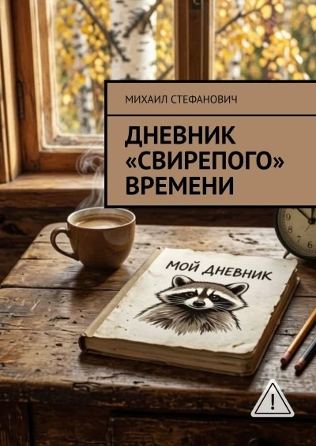
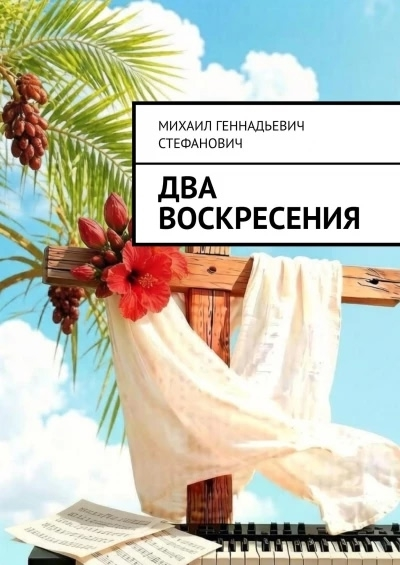
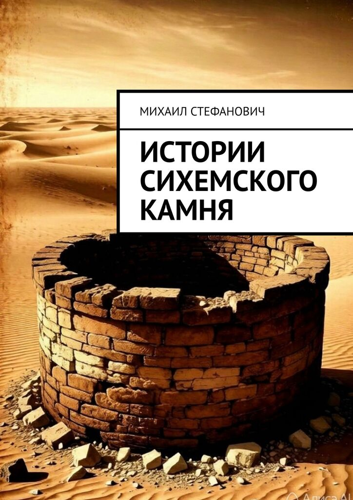
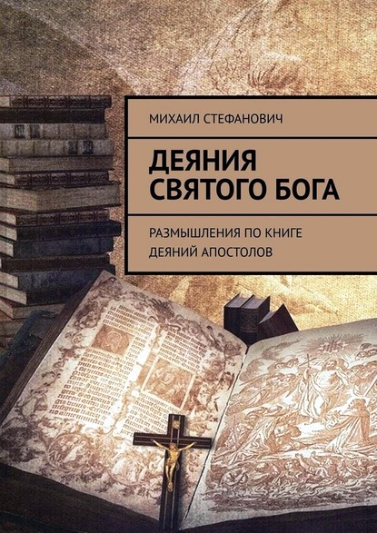
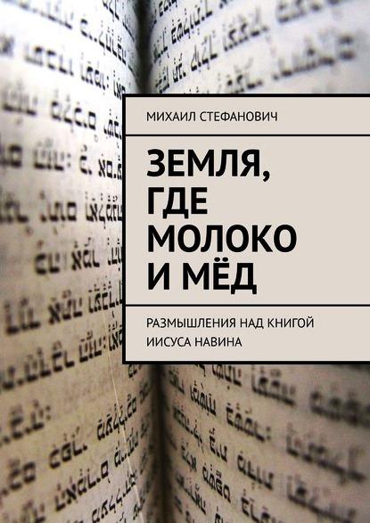
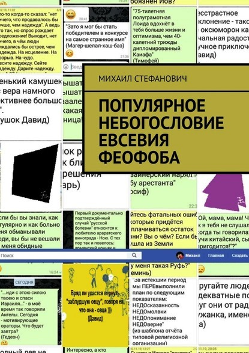
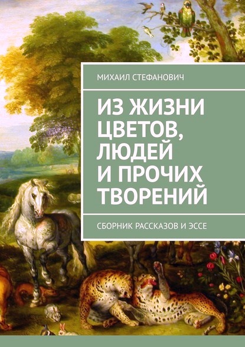
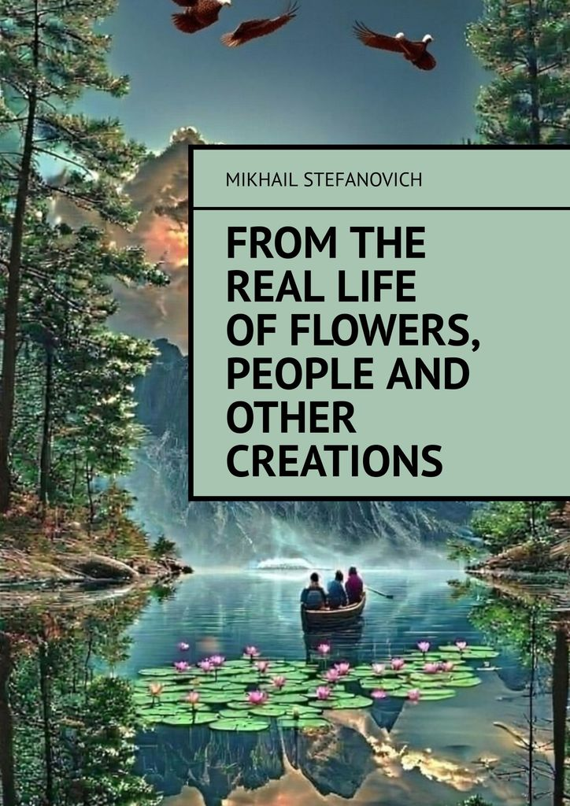
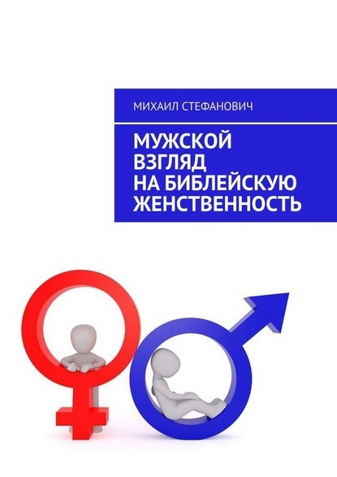

Книги на стыке библейской экзегетики и стендапа, философии и современной прозы. Для тех, кто не боится задавать вопросы, на которые нет удобных ответов.
Выберите направление, которое откликается вам сейчас

Макс — офисный клерк, решивший стать «духовным супергероем». Он учит древнегреческий, ведет дневник и анализирует коллег через библейские пороки. Стендап о том, что быть настоящим человеком — это не цитировать священнописцев, а вовремя вынести мусор и позвонить маме.

Духовно-психологическая проза, перекладывающая Страстную неделю на судьбу современного творческого человека. Восемь глав ведут параллельно евангельское повествование и историю взлёта, краха и возрождения музыканта.

«Я — камень. Лежу у дубравы Море в Сихеме со времени потопа...» Четыре тысячелетия памяти: от Аврама и Иакова до девочки, на которую никто не обратил внимания. Взгляд на вечность через призму того, что не может сдвинуться, но всё помнит.

В чем, по моему мнению, состоит уникальность этого произведения и почему оно будет интересно читателю? Во-первых, стиль книги «Деяния Святого Бога» - это микс из библейских комментариев, экзегетического изучения, вдохновляющей проповеди. А во-вторых, внутренний настрой, или отношение к читателю - это микс из портретов «маленьких людей» Лукадо и Ортберга и портретов Большого Бога Льюиса и Тозера. Плюс к тому, бо́льшая часть иллюстраций является примерами сегодняшней действительности постсоветского, постмиссионерского, центральноазиатского христианства, о котором, к сожалению, даже в России, зачастую имеют неточное представление.
«А не замахнуться ли нам на написание книги?» - спросил как-то я на нашей домашней группе. «Ну мы же не богословы и не литераторы», - прозвучали неуверенные ответы. «Но мы же верим в Бога, открывающего Себя в Писании?» - снова спросил я. Так и родился наш символ веры, которым мы руководствовались в течение года. Твёрдо веря в то, что «Иисус Христос вчера и сегодня и во веки Тот же» (Евр.13:8), а значит и сегодня Его действия и проявления такие же, как во времена написания Нового Завета, твёрдо веря в то, что Дух Божий живёт в каждом верующем, превращая его в храм Божий (1Кор.3:16), твёрдо веря в то, что если Всемогущий Бог может использовать для передачи Своего откровения и ослицу (Чис.22:28), и маленькую девочку (4Цар.5:2-4), то тем более может использовать, хочет использовать и использует и немудрых и немощных (1Кор.1:26-29), то есть нас, твёрдо веря в то, что различные дары, проявления и действия Духа Святого даются для пользы всех верующих, а не для личного блага (1Кор.12:4-7), а также даются «как Ему угодно» (1Кор.12:11), твёрдо веря в то, что «… Когда вы (то есть «мы») сходитесь («сходимся»), и у каждого из вас есть псалом, есть поучение, есть язык, есть откровение, есть истолкование, - все сие да будет к назиданию.» (1Кор.14:26), то есть, каждый верующий может обогатить духовно другого, через свидетельство или личное откровение, твёрдо веря в то, что «… где двое или трое собраны во имя Мое, там Я посреди них» (Матф.18:20), а значит групповое изучение Писания и размышление над ним, совместный поиск воли Божьей и Его присутствия, по сравнению с индивидуальным, предоставляет больше возможностей для более полного и объёмного видения Бесконечного и Безграничного, поскольку мы можем дополнять и корректировать друг друга, ни коим образом не пытаясь преуменьшить или проигнорировать необходимость личного общения с Величайшей Личностью, в которую (необходимость) твёрдо верим, а лишь твёрдо веря в важность и действенность незаслуженно забытого коллективного аспекта Богопоклонения и взаимного назидания (1Фесс.5:11), веря в то, что опыт нашей домашней группы может оказаться полезен и другим братьям и сёстрам и таким образом принесёт славу Жениху Христу и Его Невесте Церкви, решились составить настоящий труд, записав в него те мысли и откровения, которые пришли к разным членам во время группового изучения Книги Деяний Апостолов. И да благословит нас всех Господь!
Тогда они возвратились в Иерусалим с горы, называемой Елеон, которая находится близ Иерусалима, в расстоянии субботнего пути. И, придя, взошли в горницу, где и пребывали, Петр и Иаков, Иоанн и Андрей, Филипп и Фома, Варфоломей и Матфей, Иаков Алфеев и Симон Зилот, и Иуда, [брат] Иакова. Все они единодушно пребывали в молитве и молении, с [некоторыми] женами и Мариею, Материю Иисуса, и с братьями Его. И в те дни Петр, став посреди учеников, сказал было же собрание человек около ста двадцати: мужи братия! Надлежало исполниться тому, что в Писании предрек Дух Святый устами Давида об Иуде, бывшем вожде тех, которые взяли Иисуса; он был сопричислен к нам и получил жребий служения сего; но приобрел землю неправедною мздою, и когда низринулся, расселось чрево его, и выпали все внутренности его; и это сделалось известно всем жителям Иерусалима, так что земля та на отечественном их наречии названа Акелдама, то есть земля крови. В книге же Псалмов написано: да будет двор его пуст, и да не будет живущего в нем; и: достоинство его да приимет другой. Итак надобно, чтобы один из тех, которые находились с нами во все время, когда пребывал и обращался с нами Господь Иисус, начиная от крещения Иоаннова до того дня, в который Он вознесся от нас, был вместе с нами свидетелем воскресения Его. И поставили двоих: Иосифа, называемого Варсавою, который прозван Иустом, и Матфия; и помолились и сказали: Ты, Господи, Сердцеведец всех, покажи из сих двоих одного, которого Ты избрал принять жребий сего служения и Апостольства, от которого отпал Иуда, чтобы идти в свое место. И бросили о них жребий, и выпал жребий Матфию, и он сопричислен к одиннадцати Апостолам. (Деян.1:12-26) В детстве я, как и большинство других мальчиков, нередко падал. Не потому, что у меня были проблемы с координацией, а потому, что в детском возрасте организм требует большого выброса энергии. Надо бегать, надо прыгать. Но при этом не избежишь падений. Эти падения зачастую сопровождались как разбитыми коленками, так и дырами на брюках. Поскольку каждый раз покупать новые брюки было непосильно для семьи рядовых советских инженеров, а некоторые дыры невозможно было заштопать, я хорошо знал, что такое заплатки. Ох уж эти заплатки… Это было унизительно, особенно в присутствии девочек. Вернее одной из них. Приходилось придумывать, как встать так, чтобы заплатки на коленях не бросались в глаза. Не всегда это удавалось, но было бы гораздо страшнее, если бы в глаза бросались дыры. Позднее я обнаружил, что у заплаток есть много плюсов, если рассматривать их как технику лоскутного шитья. Это произошло, когда я из различных лоскутков и обрезков сшил пододеяльник. Он был великолепен! Ярок, пёстр, неповторим! Но у него были ещё парочка огромных плюсов. Во-первых, я его сшил сам. Это было моё творение. Любимое творение. Во-вторых, если бы он протёрся или порвался, легко можно было бы нашить новую заплатку и это даже не стало бы заметно! В пазлах или мозаике каждый элемент должен находиться на своём месте, а в моём пододеяльнике всегда было поле и для фантазии, и для творчества, и для взаимозаменяемости. Сегодняшний отрывок из книги Деяний напоминает мне как раз процесс лоскутного шитья, а не просто латания дыр заплатками. Посмотрите на текст. И для начала представим себе обстановку, в которой происходят сегодняшние события. После вознесения Иисуса ученики возвращаются с Елеонской горы в Иерусалим, где в течении некоторого времени находятся вместе с женщинами и другими людьми в совместной молитве и поиске Божьей воли, а также в ожидании исполнения обещанного Иисусом сошествия Духа Святого. И ещё раз вспомним те тезисы и вопросы, которые мы выбрали как направляющие нас в изучении отрывка. Тезисы: Автор – Сам Господь Бог. Тема – портрет Бога, Его сущность, Его характер, Его действия, Его отношение к людям, их поведению. Его отношение ко мне лично, к моему поведению, к моим мыслям и целям. Его план относительно всего творения и меня лично, и то, как Он собирается его воплотить. Вопросы: какую сторону характера Бога я могу увидеть в этом отрывке? Каким является Его отношение к описываемым событиям? Кем являюсь я, в этом отрывке? Чему мне надо научиться, и что исправить? Как мне приготовиться «ко всякому доброму делу» (2Тим.3:16,17)? А теперь – к основному тексту. Иуда отпал. Образовалась дырка. Но вновь избранный Матфий – это не заплатка! Ведь всё собрание, которое мы видим в горнице, настолько разнообразно, что выглядит как раз как мой пододеяльник 🙂. Апостолы, женщины, братья Иисуса, ученики… Столько всего! И всё такое разное! Такое не похожее друг на друга! Вернее, не «всё», а «все». И вместе! Но то, что Бог создаёт целое из разнообразных лоскутков, и потому это целое так ярко и прекрасно, не единственный вывод, который можно извлечь из сегодняшнего отрывка. Сколько времени прошло от отпадения Иуды до избрания нового Апостола? Неизвестно. Вернее, это можно было бы высчитать, но Писание не уделяет этому большого внимания. Внимание уделяется другому моменту. Люди могли и забыть об образовавшейся дыре, и не придать важности тому, что вместо 12ти осталось 11ть. А вот Бог – нет. Для Него любая мелочь, любая деталь, касающаяся Его замысла, Его творения, Его «пододеяльника» важна. Кто принимал участие в собрании? И оставшиеся Апостолы, и женщины, и прочие люди, которые не названы поимённо, но обозначены количественно, «около ста двадцати»! Это какая же горница могла вместить такое количество народа! Но мне интереснее то, что такое множество было «единодушно». Попробуйте объединить хотя бы 120 слушателей проповеди! Трудно? Кто хотя бы раз стоял за церковной кафедрой поймет, о чём речь. Но не для Бога. Ведь решение по кандидатам в Апостолы всё же было принято. И не большинством голосов, как это принято сегодня даже в церкви. «ЕДИНОдушно». Значит, Бог действует одинаково в любом человеке? Не в смысле «производит одно и то же», а в смысле «производит в каждом». И нет такого лоскутка, который был бы не нужен, и который не занял бы своего места, и который не стал бы частью одного целого. Ещё несколько наблюдений из сегодняшнего отрывка, сделанных во время нашего совместного обсуждения. Дух Святой напоминает, что все пророчества исполняются, что всё происходящее известно Богу, поскольку является частью Его плана. (16-18) Дух Святой напоминает, что необходимо в точности исполнять волю Божью, открытую в пророчествах. (20) Дух Святой избирает к служению. (23-26) При этом, открывая Себя и открывая место каждого в служении. Дух Святой ожидает, что разные люди будут выполнять разные служения. Бог ценит постоянство человека в следовании за Христом. (21-22) Бог верен Своим обещаниям и потому руководит этим собранием и даёт нужные мысли и нужные слова («Где двое или трое…», «другого Утешителя», «…не заботьтесь, как или что отвечать, или что говорить, ибо Святый Дух научит вас в тот час, что должно говорить» (Лук.12:11,12) Дух Святой открывает Свою волю тем, кто знает Его Слово. Необходимо проверять полученные откровения и руководства на соответствие смыслу Писания. Бог не исключает участие человека в принятии важных решений, не игнорирует нас, так как уважает наши права. Бог – Бог не только отдельного человека, но и группы людей. И, пожалуй, об этом мы чаще всего и забываем, даже читая «Отче наш». А ведь там, как раз и отсутствует напрочь идея индивидуализма. «Наш, нам, наши» и ни разу «я». Но всё же самое главное, это то, что Бог не любит «дыр». И если сегодня мы видим в нашем служении, или в нашей церкви какой-то недостаток, нет лидеров, нет способных людей, то это только потому, что мы их не видим, а не потому, что их нет. Бог восполняет любой недостаток!

Вам говорили: «Приди к Иисусу — и у тебя всё будет хорошо». Прошли годы. А ничего не изменилось. Христос по-прежнему жив. Обетования по-прежнему в Писании. А вы — по-прежнему ждёте. Ребёнка, как Аврам с Сарой. Исцеления. Работы. Чтобы сын перестал пить. Чтобы мама перестала плакать. Чтобы «вера ваша не была «мало», а чудеса — «много»». Если вы — как Асаф, «видя благоденствие нечестивых», задаётесь вопросом: «не напрасно ли я очищал сердце моё?» — эта книга для вас. Это размышление над книгой Иисуса Навина — одной из самых «неудобных» книг Библии. Той, где обетования есть, а земля завоёвывается медленно, с потерями, с обманом гаваонитян, с поражением под Гаем. Той, где в живую землю входят только двое из двух миллионов. Здесь нет готовых ответов. Зато есть: — отсылки к общей для постсоветских поколений культуре и истории, — вымышленные герои — такие, как молодой левит Ицик, несущий Ковчег Завета через расступившийся Иордан, — личные свидетельства неудач и побед Бога, — живой разговорный язык и нестандартный богословский анализ, — вопросы для обсуждения в малой группе в конце каждой главы, — «домашние задания»: отрывки для заучивания и приглашения к молитве. Это и пособие для лидеров церкви, и ободрение для ищущих, и поддержка для тех, кто столкнулся с кризисом веры. Такое сочетание встречается нечасто. Добро пожаловать. Давайте начнём вместе изучать книгу Иисуса Навина.
Почему именно книга Иисуса Навина? Чем она так актуальна для нас сегодня? Чем так заинтересовала, кроме того, что это часть Библии? Во-первых. Сама личность героя книги. Из Египетского рабства вышло порядка двух миллионов евреев. И все они не просто вышли, а шли, чтобы войти в землю, где молоко и мёд, но вошли в землю обетованную из этих двух миллионов только двое – Иисус Навин и Халев. Даже Моисею этого не было дано. Однако, хочу, чтобы при изучении этой книги, мы больше внимания обратили не столько на личность, характер и поступки Иисуса Навина, а, помня, что «все это происходило с ними, [как] образы; а описано в наставление нам, достигшим последних веков» (1Кор.10:11), провели параллели между Израилем, выведенным из египетского рабства, и нами, освобождёнными от рабства греха, между Израилем, который наконец-то должен получить в пользование данные некогда обетования земли, и нами, также получившими немало обетований непрекращающейся Божьей заботы и Божьего присутствия. Несколько лет назад я проводил что-то вроде исследования в интернете о темах, интересующих и волнующих христиан. В окне поисковой системы я забивал «проповедь о…» и дальше – богатстве, успехе, смирении, служении и т.д. А потом сравнивал результаты по количеству ссылок. Нас гораздо больше интересовало процветание земное, нежели успех в хождении пред Богом. Поиск благословений (620 тыс. ссылок) нам намного ближе, чем стремление к жертвенности (81 тыс. ссылок). И всё бы ничего, если бы в этом отражалось лишь наше стремление видеть в Боге больше милости и заботы, чем воспитания и справедливости. Однако, как быть тем людям, которые будучи больными, получили обетования исцеления, но проходят годы, а то и десятилетия, а ничего не меняется? Как быть тем людям, которым в церкви внушают, что они будут стоять пред царями, а в их карьере нет никакого роста? Как быть тем матерям, которые уже полжизни молятся за своих пьющих сыновей? Тем отцам, которые не могут купить своей дочери последний I-Phone? Христиане всё так же умирают от рака и страдают от гипертонии, всё так же теряют свой маленький бизнес и вклады в банках, всё так же попадают под насмешки или издевательства соседей и сослуживцев, а то и братьев и сестёр по вере. Всё так же, как Давид или Асаф, слышат вопрос «где Бог твой?» (Пс.41:4; Пс.78:10), и так же плачут. И плачут не только от того, что у них в жизни не так хорошо, как хотелось бы. Как говорил один христианин, служитель и проповедник: «Мне особенно больно не потому, что у меня плохо, а потому что у другого в это же самое время хорошо». Всё так же дети Божьи слышат «приди к Иисусу и у тебя всё будет хорошо, все обетования Божии, которые «да» и «аминь» тебе доступны и открыты, бери, пользуйся и наслаждайся», но задаются вопросом «Боже Мой, Боже Мой! для чего Ты Меня оставил?»(Матф.27:46) Я говорю так, исходя из своего личного опыта, и надеюсь, что вам не знакомо многолетнее ожидание никак не исполняющегося Божьего обетования благословения. Вы не ждёте годами ребёнка, как Аврам с Сарой, и ваше сердце не рвётся на части, когда очередной доброхот спрашивает вас «ну чего же ты?» А фраза «веры у тебя мало, поэтому мало чудес в твоей жизни» никогда не касалась вашего уха. Но если вы как Асаф, «видя благоденствие нечестивых», которым «нет страданий до смерти их, и крепки силы их» задаётесь вопросом «не напрасно ли я очищал сердце мое и омывал в невинности руки мои» (Пс.72), если вы как Пётр хотите знать «что же будет нам?» в результате того, что «мы оставили все и последовали за Тобою» (Матф.19:27), если вопль святых «доколе, Владыка Святый и Истинный, не судишь и не мстишь живущим на земле за кровь нашу» из 6й главы книги Откровения для вас больше, чем абстрактная поэтическая метафора, относящаяся лишь к тем, кого в своё время убивал римский император Нерон, или если вы очень хотите знать, где наша земля «хорошая и пространная, где течет молоко и мед» (Исх.3:8 и др.), то – добро пожаловать, давайте начнём вместе изучать книгу Иисуса Навина.
Священники, несшие ковчег, стояли среди Иордана, доколе не окончено было все, что Господь повелел Иисусу сказать народу, так, как завещал Моисей Иисусу; а народ между тем поспешно переходил. (Иис.Нав.4:10) Прошлый раз мы с вами говорили о том, как полезно бывает не только вести свои собственные дневники, но и читать дневники, записки и книги других верующих, наших предшественников. Сегодня я хочу предложить вам закрепить это на практике и прочитать несколько строк из одного такого дневника. Итак, «Мемуары молодого левита». «Меня зовут Ицик из колена Левия из сынов Каафовых сын Шеломофа внук Иахава. Мне 32 года. 3 года как женат, но детей пока нет. Я с детства знаю своё место среди сынов Израилевых: моё предназначение – носить Ковчег Завета. Мой отец носил ковчег. Мой дед носил ковчег. Мои сыновья будут носить ковчег. Мои внуки будут носить ковчег. Так определено Господом Богом Израилевым, выведшим нас из Египетского рабства. Нас таких, сыновей Каафовых, определённых Господом Богом Израилевым на служение при Скинии, около трёх тысяч. Кто-то всю жизнь носил брусья скинии, и его дети будут носить эти же самые брусья. Кто-то всю жизнь носил серебряные подножия для брусьев скинии, и его дети будут носить эти подножия. Кому-то достались чаши, кому-то – покрывала, а моим отцам и мне – самое опасное, самое ответственное – Ковчег Завета. Сколько себя помню, я всегда был рядом с отцом, а значит, и с Ковчегом. Глядя на отца и других носильщиков Ковчега, я всегда задавался вопросом: не тяжело ли им? Однажды, когда мне было лет восемь, я спросил об этом у отца, а он улыбнулся в ответ и сказал, что это не они несут Ковчег, а Сам Бог, Который призывает возложить на Него все наши заботы и бремена и обещает, что Его Ангелы будут охранять и носить на руках тех, кто возложил на Него своё упование. Сам Бог несёт и Ковчег, и носильщиков Ковчега. Я не понял тогда слова моего отца, но просто поверил ему. Когда меня научили считать, я прикинул, сколько может весить Ковчег Завета? Вот сколько, к примеру, могут весить херувимы из чистого золота, которые покрывают крышку Ковчега Завета? 80 сантиметров в высоту, 80 сантиметров в ширину, 130 сантиметров в длину, это получается… Ого! Это получается очень много золота! 832 тысячи кубических сантиметров! Если посчитать, что золотые херувимы над крышкой ковчега занимают одну треть этого объёма и вычесть пустоты, то всё равно выходит очень много, около 280ти тысяч кубических сантиметров золота, тяжеленого золота. Ну, пусть даже не одну треть, пусть одну пятую, пусть одну десятую, всё равно это полторы-две тонны!!! А ещё сама золотая крышка! А ещё сам покрытый золотом ящик Ковчега! А ещё каменные скрижали, которые лежат внутри Ковчега! Какой же сильный должен быть мой отец! Я так гордился им, так хотел быть на него похожим! Помню, однажды, мне пришла мысль, что я уже достаточно большой и такой же сильный, как мой отец, и я тут же схватил большой камень, килограмм, наверное, на двадцать, и… Бубухх… Как же я плакал, когда этот камень отдавил мне ногу! И плакал не только от боли, но и от обиды, что я никогда, никогда не буду таким сильным, как мой отец. Захлёбываясь слезами от боли и обиды, я жаловался об этом открытии, об этом разочаровании своему отцу, а он, гладя меня по голове, успокаивал, говоря, что Бог, Великий Бог, Бог, сотворивший небо и землю и всё, что наполняет их, никогда, никогда не даст нам задания, которое было бы нам не по силам, но обязательно, вместе с этим заданием или служением, даст нам и силы, чтобы мы смогли его выполнить, потому что Он – Бог любящий, внимательный, заботливый и сострадательный. Я опять не понял слова своего отца, и опять просто поверил ему. 2 года назад, когда мне исполнилось 30, меня посвятили в левиты и допустили к служению. Я должен был занять своё место, должен был взять свой шест для ношения Ковчега Завета. Я совсем не помню церемонию моего посвящения, потому что всё моё сознание, всё моё естество наполнял лишь жуткий страх, страх, что я не справлюсь, что опозорюсь на глазах у всех, что я сломаюсь под тяжестью трёхтонного Ковчега, ведь даже 20тикилограммовый камень в детстве мне оказался не под силу! Страх, что мою слабость и мой позор увидят все, в том числе моя молодая и любимая жёнушка Авиталь, «дочь росы», как переводится её имя, такая же нежная и беззащитная, как и утренняя роса! Уж лучше бы я умер маленьким… И тут я услышал чей-то голос, говоривший мне то, что в детстве говорил и мой отец: «не бойся, ибо Я с тобою; не смущайся, ибо Я Бог твой; Я укреплю тебя, и помогу тебе, и поддержу тебя десницею правды Моей». Я огляделся вокруг, пытаясь увидеть своего отца Шеломофа, хотя и помнил, как мы хоронили его в пустыне Синайской, но увидел лишь глаза моей Авиталь, смотревших на меня с гордостью и надеждой. Как же я боялся опозориться перед ней, выставив напоказ свою слабость! И тут я снова услышал тот же голос: «Я препоясал тебя, хотя ты не знал Меня, не бойся, только веруй, ибо иго Мое благо, и бремя Мое легко». Я помню, как подхватил шест, на котором была установлена моя ноша, приготовившись сломаться или провалиться под землю, и… Тут я понял смысл слов своего отца. Не мы носим ковчег, но ковчег носит нас! Я посмотрел на других носильщиков. Они улыбались мне в ответ, как улыбаются взрослые, глядя на то, как ребёнок открывает мир. Они то уже знали, что значит «бремя Моё легко». С тех пор я ношу Ковчег. А может быть, это Бог носит меня? Я прекрасно знаю, кто и когда должен идти. Впереди – колена Иуды, Иссахара и Завулона. По бокам – Рувим, Симеон, Гад и другие. В центре – мы, левиты, несущие Ковчег Завета и скинию. Так мы ходили и вчера, и год назад, и два года назад, когда я первый раз взялся за шест Ковчега. Так ходил и мой отец. А сегодня – порядок нарушен. Вот идут 12… С разными по весу и размеру камнями. Иуда – камешек поменьше и полегче, их предок был тот ещё хитрован… Рувим: их предок был силён, но необуздан, вот и сегодня в руках представителя колена Рувимова самый большой и неудобный камень… Вот, прошли 12 и пошли вооружённые войска… Час… Другой… Идут женщины и дети… Час третий…. Колени ломит, икры сводит судорогой… Вот прошли люди и пошли стада… Бросить бы всё… Но, что-то звучит внутри, как будто бы чей-то заботливый и понимающий голос: «Бремя моё легко»… И становится легче! Под ногами – вязкая глина. Над головой – палящее солнце. В голове – смятение, сумбур, страх, и… Голос. Голос, наводящий порядок и устанавливающий мир: «Сыны человеческие покойны в тени крыл Моих». И солнце становится не таким палящим… Справа – высоченная стена воды, слева, вдалеке, еле различимые фигуры моих братьев и сестёр. Идут себе спокойненько, песенки распевают. А тут стоишь, потеешь… Поторопились бы что ли? Так нет же, идут степенно, как на мирной демонстрации… Ну правильно, они же не видят этой стены из воды в несколько этажей высотой… Хотя нет, идут поспешно. Это из-за расстояния кажется, что плетутся еле-еле. Как-никак две тысячи локтей, целый километр. Ох! А ведь в любой момент эта стена может сорваться, и что тогда? Унесёт, утопит, никто и имени не вспомнит. А я ведь женат всего три года, и пожить толком не успел… Кто будет рассказывать истории обо мне? Да и кому рассказывать? Детей-то нет… Пока нет… Да и будут ли? Глядя на стену из воды, невольно засомневаешься… Мне говорили, что такая же стена уже была, когда мои предки переходили через Чермное море, и ничего страшного не случилось, вроде как все успели. Но это было тогда, а что сейчас? Где гарантии? И снова тот же тихий голос: «Не бойся, только веруй»… Верую, Господи, помоги моему неверию! Ну вот, кажется и всё. Последняя овца со своим маленьким ягнёнком. Ну же! Быстрей! Надо её запомнить. Если выйду из русла Иордана, обязательно найду и пущу её на шашлык. Как она не понимает, насколько мучительно и страшно стоять, рядом со стеной из воды! Одно слово, овца… Звучит приказ «Вперёд!» Наконец-то. Едва наши стопы касаются того места, которое было берегом, река с шумом устремляется по своему руслу. Сердце радостно поёт: «Пусть шумят, вздымаются воды, речные потоки только веселят». Какие красивые слова. Надо будет обязательно рассказать моему знакомому гуслисту, может быть, песню сочинит? Мы на берегу. Мы ВСЕ на берегу. На холме гора из камней. Памятник. Интересно, на табличке памятника будет моё имя?» Здесь, запись из дневника заканчивается. Мы понимаем, что страничка этого дневника – не археологическая находка, а литературная фантазия. Но разве мы никогда не оказывались на месте молодого Ицика? Разве мы не переживали подобных чувств и настроений, неся, казалось бы, неподъёмную ношу? И наша работа, и воспитание детей, и необходимость разрешения конфликтов, и постоянная посвящённость служению, и необходимость подставлять левую щёку, а не бить в ответ, прощать, благословлять, любить врагов - всё это может казаться нам многотонным ковчегом, под тяжестью которого мы должны сломаться или утонуть в вязкой глине, если не будем слышать снова и снова «иго Мое благо, и бремя Мое легко» (Матф.11:30). Разве нам, как молодому Ицику, не приходится стоять часами, годами, а то и десятилетиями, под испепеляющим солнцем насмешек, оскорблений, клеветы, связанных с нашей верой? Разве нам никогда не казалось, как Ицику, что наши братья и сёстры так далеки от нас и им наплевать и на нас, и на наше служение? Что каждый из них озабочен лишь своим собственным спасением, своим собственным благополучием? Разве нам никогда не приходила мысль, что процесс преодоления препятствий чересчур затянулся? И не возникало желание всё бросить? Не лучше ли вернуться назад? А угрожающие волны безденежья, болезни, неверия близких? Не пугает ли тебя близость этих вполне реальных, а не надуманных волн? Не боишься ли ты, что они вот-вот сорвутся и унесут тебя? Не хочется ли тебе взять своё спасение от этих угроз, свои благополучие и безопасность в свои руки? И побыстрее? «Священники, несшие ковчег, стояли среди Иордана, доколе не окончено было все» (Иис.Нав.4:10). Они стояли до конца. И ни один из них не погиб и не пострадал. И все они не только добрались до берега сами, но и помогли своей стойкостью множеству других братьев и сестёр. И фраза «доколе не окончено было всё» несёт в себе как раз-таки идею не личного избавления от угроз, не личного обретения комфорта, а преодоления препятствия всем сообществом. И когда такое «всё» будет окончено, и ты услышишь адресованные тебе «вперёд, иди, выйди из Иордана и войди в радость господина твоего, добрый и верный раб». Как бы ни было тебе сегодня тяжело, страшно и одиноко, в сравнении с Ициком у тебя есть огромное преимущество: у тебя есть УЖЕ воскресший и победивший Христос, и у тебя есть Его Слово, и в них ты всегда найдёшь поддержку, ободрение, утешение и силу стоять, доколе не будет окончено всё.
После сего умер Иисус, сын Навин, раб Господень, будучи ста десяти лет. И похоронили его в пределе его удела в Фамнаф-Сараи, что на горе Ефремовой, на север от горы Гааша. И служил Израиль Господу во все дни Иисуса и во все дни старейшин, которых жизнь продлилась после Иисуса и которые видели все дела Господа, какие Он сделал Израилю. И кости Иосифа, которые вынесли сыны Израилевы из Египта, схоронили в Сихеме, в участке поля, которое купил Иаков у сынов Еммора, отца Сихемова, за сто монет и которое досталось в удел сынам Иосифовым. [После сего] умер и Елеазар, сын Аарона, и похоронили его на холме Финееса, сына его, который дан ему на горе Ефремовой. (Иис.Нав.24:29-33) Не все литературные произведения, не все кинофильмы, не все повествовательные истории одинаковы. Есть такие, которые начинаются хорошо и весело, но заканчиваются плохо. Как трагедии Шекспира. Есть такие, которые начинаются плохо, но заканчиваются хэппи-эндом. Как сказки про «золушек». Книга Иисуса Навина, на первый взгляд, ни то, ни другое, так как заканчивается тем же, чем и началась. Первые строки книги Иисуса Навина говорят о смерти Моисея, последние – о смерти Иисуса Навина. И не только Навина. Три погребения в пяти заключительных стихах. Не самый жизнерадостный конец, особенно для тех, кто хочет больше радости, кто ищет больше радости посреди реалий жизни. Но даже среди описания этих печальных событий можно увидеть немало полезного и обнадёживающего. Полный посмертный титул одного из глав крупнейшей в своё время империи звучал так: «император Нерон Клавдий Цезарь Август Германик, Великий понтифик, наделён властью трибуна 14 раз, властью императора 13 раз, пятикратный консул, Отец отечества». Полный титул другого лидера другого народа, британской королевы, звучит так: «Ее Высочайшее Величество Елизавета Вторая, Божьей милостью Королева Соединенного Королевства Великобритании и Северной Ирландии и других ее Царств и Территорий, Глава Содружества, Защитница Веры, Самодержца Орденов Рыцарства». Полный титул последнего российского императора состоял из полутора сотен слов. А как Библия описывает полный титул Иисуса Навина, чьим именем названа та книга, которую мы изучали в течение предыдущих девяти месяцев? «Раб Господень». И всё. Сравнивая титулы героев сегодняшнего текста из книги Иисуса Навина с теми титулами, которыми блистали или продолжают блистать и сегодня другие персонажи истории, можно сделать вывод о необходимости личной скромности в характере человека верующего, которая, пока ещё, считается добродетелью, хотя всё реже и реже. Но можно сделать и другой вывод. Быть «рабом Господним», быть Его подданным, Его служащим – это лучшее, это единственное необходимое и достаточное условие для того, чтобы прожить свою жизнь в радости. В притче о талантах, рассказанной Иисусом Христом, приглашение «войти в радость своего господина» получили не ищущие радости и не скромные, а те, кто выполнял вверенное им предназначение. «Рабом Господним» был Авраам, проживший жизнь непростую, со множеством неприятностей и передряг, но оставшийся «рабом» или «подданным» Божьим и в вечности. «Рабом Господним» был Моисей, проживший жизнь непростую, но явившийся во славе на горе преображения. «Рабом Господним» был Павел, испытавший немало и физических, и душевных страданий, но научившийся радоваться чему-то, что никак не зависит ни от состояния здоровья, ни от состояния кошелька, ни от многочисленности и верности единомышленников. Их радость была связана с их оценкой Богом. А их оценка была связана с тем, Кому они служили, подданными какого царства были. И здесь кроется первый полезный рецепт радости: стань подданным Бога и начни выполнять Его задачи, тогда тебе проще будет понять, что такое радость, и проще будет научиться радоваться. Классические словари и энциклопедии дают следующее толкование термину «эпилог»: «Эпилог - заключительная глава художественного произведения, знакомящая с дальнейшей участью героев». Однако, каким образом наш сегодняшний отрывок знакомит нас с дальнейшей участью действующих лиц и героев книги Иисуса Навина? Похороны одни, другие, третьи, и всё? Впрочем, меня больше устраивает эпилог без добавления тех текстов, богодухновенность, или Божественное вдохновение сомнительны. Да, в классической канонической Библии я вижу трое похорон. Да, это не самый вдохновляющий и не самый жизнерадостный конец. Если только… Если только не вспомнить, что Главный Герой книги Иисуса Навина вовсе не Иисус Навин. И тем более не Ицик и не Гедор, как это не печально для меня лично. Иисус Навин умер? Иосиф похоронен? Первосвященник Елеазар умер? Но Бог то, Бог то жив! И то, что Он не просто жив, но по-прежнему силён и верен и выполняет Свои обещания, можно увидеть даже в тройных похоронах. Где был похоронен Навин? В своём уделе (ст30). Где были захоронены кости Иосифа? В уделе своих прямых потомков (ст32). Где был похоронен Елеазар? В земле, данной его сыну (ст33). Они не были больше безземельными бродягами. Бог выполнил обещания данные Аврааму, Иакову, Моисею, Иисусу Навину. И такой эпилог укрепляет мою веру в то, что Бог выполнит обещания данные другим представителям народа Божьего, в том числе и мне. Выполнит и обещание «Буду вашим Богом, а вы будете Моим народом», которое звучит в Писании десятки раз. Выполнит и обещание что те, кого выбрал Иисус Христос будут Ему друзьями и их Он утвердит до конца. Выполнит и обещание, что настанет время, когда не будет ни смерти, ни плача, ни болезней. Выполнит и обещание о совершенной радости ещё в этой жизни. Ведь Он же жив! Он – Бог живой! И этим, а не тремя похоронами, заканчивается книга Иисуса Навина.

Знакомьтесь: Евсевий Феофоб. Если перевести с греческого буквально — «благочестивый и боящийся Бога». Звучит претенциозно. Но таков ли он на самом деле? И если таков, то насколько? Эта книга не учит и не утешает. Она — неудобная. Она заставит вас хохотать в самых неожиданных местах, а потом — замолкать, потому что смех окажется слишком узнаваемым. Она будет аккуратно переворачивать ваши любимые стереотипы и тихонько спрашивать: «А точно ли всё так, как тебе кажется?» Наш Евсевий очень читать любит. И Сурожского, и Сухомлинского, и Августина, и Библию — уже лет двадцать как. И вопросы задаёт. Много. Острых и неудобных. «А почему так? А кто это придумал? А почему нельзя Кока-Колой причащаться, если виноградного вина нет?» За эти вопросы его не принимают иерархические круги. И вынужден он много времени в размышлениях проводить. А размышления требуют, чтобы ими делились. Иначе захлёбнёшься. Так и появилась эта книга — «Популярное НЕбогословие». Здесь кузнечик оказывается знамением, а саранча — пищей. Здесь пни и камни радуются проповеди больше, чем люди. Здесь шизофазия из медицинской энциклопедии оказывается удивительно похожа на некоторые «сильные пророчества». Здесь благословением объявляется склероз, а жертвенность вдовы пересматривается до неузнаваемости. Здесь псалом Давида превращается то в корпоративный гимн, то в церковный отчёт. А ещё здесь есть стихи — от дерзких «Крыльев» до «Оратории», где семь нот становятся семью именами Христа: ДО-бро, РЕ-жиссёр, МИ-лосердие, ФА-ртук плотника, СОЛ-нце, ЛЯ-мка стыда, СИ-ла победы. И «сны» — те самые, от которых просыпаешься в холодном поту, падаешь на колени и молишься. Это НЕ богословие. Автор первым признается, что не богослов. Это — НЕ проповедь. Это — живой, ироничный, порой беззащитный разговор человека с Богом, с самим собой и с читателем. Разговор, в котором находится место и кузнечику, и белочке с Али-баба-экспресс, и псу, танцующему полонез на Небесах. Предупреждение: НЕ рекомендуется людям, уверенным, что у них всё правильно с богословием. А также тем, кто не любит, когда их любимые стереотипы берут и тихонько переворачивают.
Вышел однажды Евсевий Феофоб в поле прогуляться. И встретился там с кузнечиками. И вспомнил вдруг про саранчу библейскую. Не знаю, доводилось ли вам видеть тучи саранчи, застилающие всё небо вверху и всю землю внизу? Не знаю, какие чувства вы испытывали, если доводилось? Не могу ответить вместо вас. Но могу ответить за себя. Нет, туч саранчи я не видел. Но да, чувства испытывал. Неприятные чувства. Вид даже одной особи, с угрожающим «кинжалом», торчащим из брюшка вместо хвоста, «кинжала», про который мои сверстники-дошкольники рассказывали, что это грозное и изощрённое холодное оружие, вид даже единичного экземпляра отпечатался в моей памяти с далёкого-далёкого детства в виде не поддающихся контролю страха и ощущения гадливости. Этакая смесь брезгливого «ффуу» и встревоженного «ууфф». Саранча страшна и мерзка. То ли дело кузнечики. Особенно те, которые при прыжке раскрывают огненно-оранжевые или небесно-голубые крылья, превращая свой прыжок в полёт. Полёт разноцветных сигнальных ракет. Или праздничных флажков. Этакие знаменосцы насекомого мира. Этакие летающие фонарики. Или парапланы. Это уже как вам ваша фантазия подскажет. Кузнечики – не страшны и по-своему милы. Конечно же, они не бабочки, которых я очень люблю, но тоже ничего. Тоже радуют глаз и несут некое послание. Скорее всего, богословски не выверенное послание, но, поверьте, от того не потерявшее практической полезности. Ну хватит ходить вокруг да около. Перейду к сути. Моих познаний в энтомологии не достаточно, чтобы произвести более-менее точную классификацию «пресмыкающихся, крылатых, ходящих на четырёх ногах», упомянутых в Библии. Не достаточно их и для того, чтобы описать разницу между кузнечиком и саранчой. Кроме, конечно же, той, что въелась в моё воображение с детства: саранча – животное опасное, всё пожирающее, несущее голод и смерть. Кузнечик же – «совсем как огуречик», «зелёненький» и беззащитный (особенно перед лицом лягушки). Вот и словари библейские с энциклопедиями про саранчу не очень лестно отзываются. «Орудие Божьего гнева» (Вт 28:38-42, 3Цар 8:37, 2Пар 6:28), - говорят. «Одна из казней египетских, символ сил зла» (Иоиль 1:4; Откр. 9:7), - говорят. «Несёт тотальное опустошение», - говорят. И ведь правду говорят. Не поспоришь. «Ффуу» плюс «ууфф». Так? А про кузнечиков ничего не говорят. Не нашёл я про кузнечиков. В словарях не нашёл. В Библии – нашёл. В книге Екклесиаста. Но, как оказалось, и здесь упоминается разновидность саранчи по имени «хагаб». Обидно… Вот все норовят маленьких обидеть. Кроме Владимира Шаинского и Николая Носова, которые песню про кузнечика написали. Но это я так, отвлёкся. Пора вернуться к нашим баранам. Вернее, к кузнечикам. Которые, хотя и саранча, хотя и «символ сил зла», хотя и «орудие Божьего гнева», но пользу свою всё же приносят. Вот читайте сами: «…из всех пресмыкающихся, крылатых, ходящих на четырех [ногах], тех только ешьте, у которых есть голени выше ног, чтобы скакать ими по земле; сих ешьте из них: саранчу с ее породою, солам с ее породою, харгол с ее породою и хагаб с ее породою. Всякое [другое] пресмыкающееся, крылатое, у которого четыре ноги, скверно для вас…» (Лев.11:21-23). Ешьте сих! Саранча, солам, хагаб, харгол – разновидности саранчи. Туда же ещё диковинные акриды из Нового Завета входят. Которыми Иоанн Креститель питался (Мф 3:4, Мк 1:6). Суровый, видать, пророк был. Мощный! Не боялся «особенного орудия Божьего гнева»! Ел он их! Как семечки, наверное. Или как поп-корн. Впрочем, речь не о нём. К чему я? Да вот к чему: выходит, орудие Божьего гнева может оказаться инструментом Божьего спасения. Тот, кто пожирает всё подряд, может оказаться пищей. Несущий голод – насыщает. Тяжкое бедствие в странах Востока может принести благословение. То, что может на корню всё убить – животворит. Вы спросите: а при чём тут знамение? Потерпите минутку. Постараюсь объяснить. Вспомните тюрьму Иосифа. В ней он должен был сгинуть. Но именно из тюрьмы он начал своё служение по спасению семейства Израиля. Вспомните столб, приготовленный для повешения Мардохея. На нём повесили того, кто умышлял уничтожить весь народ Божий. Вспомните историю хождения по воде Петра. Шторм должен был утопить, погубить, убить. И Петра, и его сотоварищей. Но не убил, а напротив, принёс Петру незабываемый духовный опыт. Вспомните истории о прокажённых. Проказа должна была выесть до костей все человеческие ткани, как и саранча выедает всю растительность. Проказа должна была убить её носителей. Но не убила, а напротив, вдохнула новую жизнь в обречённых на смерть. Вспомните историю распятия Господа. Крест должен был убить Мессию. Но не убил, а напротив, принёс жизнь человекам. То, что обычно несёт смерть, в Господе несёт жизнь. Так и саранча. Вместо голода – насыщает. Вместо смерти – оживляет. И теперь, когда я вижу кузнечика, я вспоминаю об этом. Вот вам и знамение. А как насчёт богословской правильности этого знамения? Не знаю. Мне важнее, что пользу приносит. А о «правильности» пусть богословы спорят. Тем более, что за мысли и выводы Евсевия разве же я отвечаю?
Евсевий очень читать любил. Особенно, что-нибудь новое, оригинальное, чтоб с подтекстом да со смыслом между строк. Чтоб извилинами ржавыми подвигать да воображением прочитанное подсветить. Подкрасить, так сказать. В один день наткнулся наш Евсевий на просторах всемирной паутины на любопытный текст. Ну очень любопытный. Прелюбопытный даже. Приведу с сокращениями: «Родился на улице Герцена, в гастрономе номер двадцать два. Известный экономист, по призванию своему — библиотекарь. В народе — колхозник. В магазине — продавец. В экономике, так сказать, необходим. Это, так сказать, система… э-э-э… в составе ста двадцати единиц… …Можно стать воздушным асом. Можно стать воздушной планетой. И будешь уверен, что эту планету примут по учебнику. Значит, на пользу физике пойдёт одна планета... …Величина, оторванная в область дипломатии, даёт свои колебания на всю дипломатию. А Илья Муромец даёт колебания только на семью на свою... Спичка в библиотеке работает. В кинохронику ходят и зажигают в кинохронику большой лист. В библиотеке маленький лист разжигают. Огонь… э-э-э… будет вырабатываться гораздо легче, чем учебник крепкий. А крепкий учебник будет весомее, чем гастроном на улице Герцена. А на улице Герцена будет расщеплённый учебник. Тогда учебник будет проходить через улицу Герцена, через гастроном номер двадцать два, и замещаться там по формуле экономического единства…» И так далее. И в том же духе. (Вот ведь, как точно определил: «в духе»!) Прочёл Евсевий – и испугался. Слова вроде бы как человеческие. И язык вроде бы как русский. Но чего-то не понятно ничего! Что за напасть? С ума сошёл что ли? А потом увидел, что этот текст - стенограмма фонозаписи из приложения к «Большой медицинской энциклопедии» (1962) к статье «Шизофазия». Это будто бы болезнь такая, психическая. Когда при видимой стройности речи теряется всяческий её смысл. Хотя Евсевий больше склонен считать это проявлениями духов нечистых, мороков разных. Врезался этот страх от непонятного в душу Евсевия. А поскольку Евсевий человеком верующим был, то знал он на зубок, что любой страх, любой морок только молитвой да чтением духовным побеждается. И начал Евсевий в интернете искать, чем бы таким духовным последствия мути прежней повытравить? И нашёл, вроде бы как. Вот что нашёл, послушайте: «Это сезон, чтобы идти близко и быть во власти руководства и инструкции. Есть конкретные задания, которые высвобождаются для отдельных лиц, служений, предприятий, которые должны быть приняты. Бог нуждается в том, чтобы его народ взял то, что до́лжно взять, и выполнил это там, где до́лжно выполнить. Что бы ни говорилось, это станет очевидно для тех, кто готов быть послушным и смело выходить, и властно двигаться. Возьмите на себя ответственность в этом месяце за то, где даётся вам ясность, очевидность. Это не время для колебаний! Это сезон, чтобы действовать и уверенно двигаться вперед по вере дальше в очевидное в октябре месяце (по улице Герцена – добавлено мной). Сфокусируйтесь! Он вбивает колья для новых территорий! Провозглашение этих кольев удержит врага на расстоянии… Проклятие обета нищеты подняло свою голову, чтобы заявить о правах на свои жертвы... Последний дождь касается Истины ... На этой недели есть значительное ускорение и сдвиг динамики. Сядьте и снова попросите стратегии ясности и очевидности. Некоторые стратегии повторятся, но на этой неделе будет «выпалывание» стратегий, которые вы считали руководящими инструкциями власти, но они не были таковыми…» И так далее. И в том же духе. Брр… Снова испугался Евсевий. Снова слова вроде бы как человеческие, и язык вроде бы как русский. Но чего-то опять не понятно ничего! Искал-искал Евсевий указание, что это ещё один пример шизофазии, но нашёл лишь претензию на то, что это пророчество. Публикация так называлась: «Сильное пророчество». И комментарии под ней были навроде «огонь!», «мощно!», «до костей пробирает!» «Не исповедимы пути Твои, Господи!» - изумился Евсевий. И на всякий случай отписался от доброй сотни аккаунтов «друзей»… А то вдруг это заразно? P.S. Вроде бы как не очень поучительно закончил? Ну тогда вот вам, держите: «… лучше пять слов сказать умом моим, чтобы и других наставить, нежели тьму слов на [незнакомом] языке…» (1Кор.14:19).
И было в тот день. Гулял Евсевий по полю близкому. Гулял, да ветром наслаждался. Тем ветром, который в лицо. Тем, который ощущение полёта даёт. Наслаждался, значит, Евсевий, да снова стих написал. Вот какой: Я чувствую музыку так же, как чувствуют ветер: До режущих слёз, до дрожанья души, до потери дыханья! Всё те же семь нот – ничего нет привычней на свете, И нет ничего, что бы так каждый раз удивляло. Семь нот – до, ре, ми, - без диезов и без обертонов, Фа, соль, - где-то в сердце торжественно бьют в барабаны, Ля, - взвыли порывом фаготы, тромбоны, валторны, Си, - чёрные бабочки с белых полей музыкантов Вспорхнули к Тому, Кто славнее любых композиторов, И Чьих мановению рук послушатся звёзды и атомы… Пять линий, семь знаков… Не сделаю я никакого открытия, Пытаясь мою ораторию втиснуть на белой бумаге… Пусть кто-то решит «от безделья хочу быть услышанным», Пусть скажет завистник «ни рифмы, ни слога, ни вкуса»… Легко заглушить ораторию уху не слышную, Но я попытаюсь хотя бы мгновеньем воспеть Иисуса! ДО: ДОгма? О, нет! В Иисусе звучанье другое: ДОбро в Нём звучит и ДОвольство, ДО Неба ДОрога проложена, ДОшёл ДО конца ради нас, без остатка отдался, ДО боли, ДОстаточно сказано Им и с ДОверием сделано, прощено. РЕ: Он – РЕжиссёр драмы жизни моей со счастливым концом! РЕакция – взгляд РЕбятни восхищённо расширенно замерший. РЕшительность, РЕзультативность, РЕальность – всё в Нём и о Нём! Греми, оратория! Ноты и буквы, слагайтесь в победные марши! МИ: МИкрохирург, убивающий грех, воскресающий сердце. Он – Тот, Кто найдя МИллиарды причин наказать разрушением МИр, Закутался в МИлости МИлоть, но не для того, чтоб укрыться, согреться, Напротив – замёрзшие души теплом отогреть, одарить. ФА: плотника ФАртук одел, не потребовав звуков ФАнфарных. ФА: ФАтуму, ФАрту господствовать в вере людей запретил. Он ФАльш ФАрисейства раздел, обнажил и поставил пред ФАктом, Что Он - ФАнтастичней традиций и правил, поскольку весь мир возлюбил. СОЛЬ: СОЛнечный свет перед Ним, словно чёрные дыры. СОЛист изрекающий Слово, зажёгшее звёзды. СОЛдат, побеждающий боли и страхи любые. СОЛома в яслях при начале пути, а в конце жизни – гвозди. ЛЯ: Он избавляет от ЛЯмки стыда, от бессиЛИЯ бремени Твой ЛЯпсус любой превратит в лебединую песню Пусть ЛЯзгают, клацают вражьи оскалы вокруг – это только до времени Победа за Ним! В Нём победа! И это чудесно! СИ: СИлой и славой смычковые трубам завторили СИгнал протрубил: не СИди, поднимайся, иди против ветра! Крест – СИмвол победы и апофеоз оратории, - Уже опустел. Он воскрес! Он достоин концерта! Взмахнул дирижёр, но на этом ещё не поставлена точка. Семь нот не исчезли, о нет, и привычные буквы остались. Петь славу Христу, друг, и можно, и нужно бессрочно. Прими эстафету. Пиши, сочиняй и испытывай радость!

Есть книги, которые учат. Есть книги, которые утешают. А есть книги, которые заставляют смеяться — и тут же замолкать, потому что смех оказался слишком узнаваемым. Перед вами — именно такая книга. Здесь бабочка становится заветом, муравей с соломинкой — образом несения креста, а два карапуза на пляже — зеркалом для взрослых, которые рушат чужие башенки из песка, потому что свои не получаются. Здесь пастор и дьякон десятилетиями спорят об одном стихе из Притч, пока восьмилетний мальчик видит в нём то, что они упустили: лошадь, телегу и ромашки вдоль дороги. Автор не предлагает готовых ответов. Напротив, он мастерски умножает вопросы — «лавина вопросов, цунами вопросов, вулкан вопросов с последующим землетрясением мозга». Но именно в этих вопросах, среди иронии, самоиронии и самых неожиданных сюжетных поворотов (кто бы мог подумать, что «гвоздично-хризантемовый император» найдёт своё счастье в квартире уборщицы с больной дочкой?), и рождается то, что трудно назвать иначе как живой верой. Верой без погон и регалий. Верой, которая приходит к Отцу «как неразумное и ничего не знающее дитя». Верой, способной увидеть, что «воскресшее всегда лучше того, что было до падения», и что даже у уродливого репейника находится пчела, для которой он — источник мёда. Семнадцать текстов. Семнадцать попыток посмотреть на привычное так, будто видишь его впервые. Семнадцать приглашений — выйти из роли зрителя на диване и стать участником. Предупреждение: НЕ рекомендуется людям с отсутствием чувства юмора и самоиронии. А также тем, кто уверен, что уже всё понял про Бога, церковь и себя.
Ах, до чего же приятно бывает порой ничегонеделание! Особенно ничегонеделание за пределами города. Где-нибудь в поле. Или в горах. Или на берегу реки. Или на берегу реки, орошающей горное поле. Точно! Идеальный вариант, поскольку должен угодить любому вкусу. Сидеть на нагретом солнце камушке и любоваться тем, чего так не хватает в каменных джунглях современного города. Любоваться травинкой, муравьём, паутиной (пожалуй, хорошо, что в каменных джунглях этого не хватает), цветком, бабочкой. Особенно бабочкой. У меня к ним с некоторых пор особое отношение. Но не с тех пор, как я узнал некоторые ужасные вещи из её жизни. Не с тех пор, как из бабочкиного шкафа, вернее кокона, вывалился ветхий скелет, вернее гусеница! Да-да, жуткая мохнатая и рогатая гусеница с ядовитыми чёрными и оранжевыми пятнами на спине – это бабочка в детстве! Вы знали об этом? И молчали? И продолжали любоваться порхающим над цветком цветком? Снимаю шляпу перед безусловностью вашей любви! И, надеюсь, вы догадались, что это была шутка. Шутки шутками, но к бабочкам у меня и вправду с некоторых пор особое отношение. Не то чтобы раньше я их недолюбливал, а сейчас наоборот. И, конечно же, дело не в том, что раньше я их любил, а теперь испытываю острую неприязнь. Нет. Бабочки мне всегда нравились. В любом виде. Нарисованные. Марципановые. Оригами. Галстуки. В любом виде. Кроме приколотых булавкой к картонке. Но вот однажды… Они стали мне нравиться ещё больше. Расскажу, пожалуй. Дело было на нагретом солнцем камне, лежавшем на краю лужайки недалеко от берега горной реки. Дело было в час созерцательного ничегонеделания носящего название «выездной отдых на природе». Сижу на камушке, грею бока и кости. Любуюсь творением. Восхищаюсь Творцом. Молюсь. Размышляю. Вижу порхающую капустницу. Или белянку. Простите, не силён в энтомологии. Скромная, одноцветная, сквозь солнцезащитные очки (рудимент горожанина) цвет белый или жёлтый - не различить. Если невнимательно смотреть, то можно перепутать с клочком бумаги, беспорядочно мечущимся под порывами ветра. Но! Как же радует она глаз! Особенно в конце весны! Её полет – как заявление: зима закончилась! И вот любуюсь я этим заявлением на клочке бумаги, а мысли лезут, спешат, расталкивают друг друга локтями: Вот для чего нужны бабочки? Какая от них практическая польза? Чтобы опылять цветы? Так ведь они намного менее эффективны, чем пчёлы. А для чего нужны пчёлы? А для чего нужны цветы? Чтобы кормить бабочек? Или кормить пчёл? Чтобы те, в свою очередь, кормили нас, людей, душистым сладким аллергенным мёдом? А орхидеи для чего нужны? Кого они кормят? Вот бы попробовать орхидейный мёд! А такой бывает? Или орхидеи пожирают тех, кто пытается полакомиться ими? А всякие там хищные росянки и прочие удивительные растения для чего нужны? А если и цветы, и бабочки нужны для того, чтобы радовать глаз человека? Чтобы доставлять кому-то эстетическое наслаждение? Кому-то это мне? А для чего нужен я? Для чего нужен человек? Тут знатоки Библии, люди книжные и учёные, глубокие специалисты-богословы дружно ответят: чтобы славить Бога и наслаждаться общением с Ним. Бесспорно, они правы. Другая группа знатоков Библии ответят: возделывать Землю, заботиться о доверенном нам Богом творении. И они правы. Третьи сделают в своём ответе упор на Великое Поручение. Не удивляйтесь, но и они правы. Но я, как человек простой и некнижный (по крайней мере, мне хотелось бы приходить к Богу именно в таком статусе, без чинов без дипломов, без погон и прочих регалий, приходить к Отцу как неразумное и ничего не знающее дитя), так вот, как человек простой и некнижный я могу позволить себе неразумие, если хотите – глупость, и задаться вопросом: а что если человек был создан для того, чтобы радовать глаз Бога? Что если моё призвание, моё предназначение не совершать что-нибудь великое с разной степенью величия, а доставлять Творцу, сотворившему меня, Отцу, родившему меня эстетическое удовольствие? Не я должен наслаждаться Богом, а Он хочет наслаждаться мной? Тогда как быть с людьми неприглядными, как внутренне, так и внешне? Мог ли Бог ошибиться, создав «некрасивого» человека? Или же проблема лишь в том, что мы не способны увидеть красоту того, кого создал Бог? Так много вопросов! И ответы богословов лишь провоцируют во мне новые вопросы. Ещё больше вопросов! Лавина вопросов! Цунами вопросов! Вулкан вопросов с последующим землетрясением мозга! И вдруг, посреди всех этих вопросов, где-то внутри рождается идея, предложение, образ, звучащие как ответ на вопрос о назначении бабочек и меня: Есть завет радуги. Всякий раз, видя радугу, вспоминай, что потопа больше не будет. Есть завет соли, который должен напоминать, что Я сохраняю и поддерживаю жизнь в человеке. Пусть будет и завет бабочки! Каждый раз, видя бабочку, вспоминай, что ты – та же самая бабочка для Меня. И радуешь Меня даже самим фактом своего существования. И для этого ты нужен. Мне нужен! «Ибо никто из нас не живет для себя, и никто не умирает для себя; а живем ли - для Господа живем; умираем ли - для Господа умираем: и потому, живем ли или умираем, - [всегда] Господни» (Рим.14:7,8).
Зарисовка из жизни. Два карапуза лет четырёх-пяти сидят на пляже. На песчаном пляже. В одних панамочках. Но не просто сидят. Со смыслом. С делом. Сидят и ведёрочком строят башенки из песка. Жёлтеньким ведёрочком и синеньким. Или красненьким и зелёненьким? Не суть важно. Важно другое. У одного - дело спорится, у другого – не очень… Первый – радуется, второй - не очень… Даже очень не… Не – в смысле не радуется. Или в смысле не спорится. Или же и то, и другое? Пусть будет и то, и другое. Первый – ближе к воде сидит. И песок у него потому влажный. Потому что волны рядом. Второй – тот поумнее. Тот от воды подальше сел. Чтоб сидеть не мокро было. Сидит второй на сухом и песок у него соответственно сухой. И ведёрко сухое. Красненькое. Или жёлтенькое? Не суть важно. История и вовсе не про ведёрко. А про что? Да не про что. Не про что, а про кого. Про карапузов двух. Вот сидит первый на мокром и в ведёрко мокрый песок набивает, а потом – этим ведёрком башенки строит. Целый город уже построил. А второй – второй поумнее: на сухом сидит. И песок в ведёрко сухой сыплет. И башенки из сухого песка мастерит. Ну как мастерит? Пытается. Старается. Вот только выход – нулевой. Пытается (настойчивый), старается (усердный), мучается (страдалец) – не получается. Смотрит на первого, учится, повторяет (молодец! умничка!) Но – результат всё тот же… Что же он делает дальше? Берёт лопатку и… … … шмяк! хрясь! шлёп! рушит башенки первого… Если не получается у меня, пусть и у тебя не будет! (Прям как у нас, у взрослых порой бывает). Мдя… Всё впечатление о себе испортил… Чего же он заслуживает? Критики и осуждения! Наказания! Отшлёпать его по голой заднице! И сладкого весь день не давать! Правильно? Да вроде бы как… Только один вопрос никак покоя не даёт: Чем руководствовался второй? Злобой? Или же неудовлетворённостью собой? Наказывать его? Или жалеть? Эх… Не знаю… Только вспоминается почему-то вот что: «Посему не судите никак прежде времени, пока не придет Господь, Который и осветит скрытое во мраке и обнаружит сердечные намерения, и тогда каждому будет похвала от Бога» (1Кор.4:5). К чему бы это?
«Вечереет… Темнеет… Холодает… Одиноко и от того невыносимо страшно! Вокруг – ни-ко-го. Все 99 моих братьев и сестёр уже давно стоят в тёплом хлеву, и только я один – здесь. Среди суровых и холодных скал. А всё почему? Да потому что баран я и есть баран! И зачем мне надо было скакать за этой бабочкой на лугу? Да, бесспорно, она была так пестра, так ярка и так красива, что на неё стоило полюбоваться! Но не до такой же степени, чтобы про всё позабыть и забрести в неизвестную мне глушь! Эх, баран, баран… Вечереет… Темнеет… Холодает… Я слышал, что здешние ущелья стали пристанищем для волков и лихих людей. Вот каких приключений ещё не хватало на мой курдюк! А братья и сёстры сейчас под охраной и защитой. Там тебе и собаки, и пастух. А тут? Ох, как же холодно и страшно! Может на помощь позвать? Ага, а вдруг моё блеянье услышит серый волк? Или медведь? Или лев? Это же тогда один раз хрусть, и нет меня! Э, нет. Уж лучше промолчу. Если вытерплю. Ох, как же холодно ночью в горах! Бее.. бее.. Чу! Какой-то шорох! Может быть, хозяин? Заметил, что меня нет и решил вернуться? Хотя, вряд ли. Людям свойственно жертвовать интересами и жизнями одного, ради сохранения интересов многих. Да и кто я такой, чтобы ради меня хозяин оставил остальных 99 без присмотра? Так, полный баран. Непослушный. Самовольный. Эгоистичный. Снова шорох. И силуэт в ночи! Медведь? Разбойник? Моя смерть? Ой, нет. Это – хозяин! Бее.. бее.. я здесь! Ох, и достанется же мне сейчас! И поделом! Вот хозяин склоняется ко мне. Видимо будет уши драть. Или же за шевелюру таскать. И поделом. Да лишь бы выжить! Ой, нет… что это? хозяин взваливает меня на плечи? Это чтобы я в темноте копыта не сбил? Чтобы согрелся? Чтобы от страха не колотило? Но меня всё ещё трясёт. А! так это хозяин хохочет от радости, что нашёл меня! Меня? Барана?»

Some books teach. Some books comfort. And then there are books that make you laugh out loud—only to fall silent a moment later, because the laughter turned out to be too recognizable. This is exactly that kind of book. Here, a butterfly becomes a covenant, an ant with a straw becomes an image of carrying one's cross, and two toddlers on a beach become a mirror for adults who destroy each other's sandcastles because they can't build their own. Here, a pastor and a deacon argue for decades over a single verse from Proverbs, while an eight-year-old boy sees what they missed: a horse, a cart, and daisies along the road. The author does not offer ready-made answers. On the contrary, he masterfully multiplies questions. But it is precisely in these questions, amidst irony, self-irony, and the most unexpected plot twists, that something difficult to call anything but living faith is born. Seventeen texts. Seventeen attempts to look at the familiar as if seeing it for the first time. Seventeen invitations to step out of the role of a spectator on the couch and become a participant. Warning: NOT recommended for people lacking a sense of humor and self-irony. Nor for those who are convinced they already have it all figured out regarding God, the church, and themselves.

В евангельских церквях Центральной Азии — множество разведённых, одиноких, неудовлетворённых браком женщин. Тех, кто боится брака. Тех, кто не умеет выстраивать здоровые отношения. Тех, кто «заводит ребёнка для себя» и ждёт от него исполнения своих мечтаний. Тех, кто служит за десятерых, а радости — ни на грош. Эта книга родилась из цикла занятий в домашней группе. И стала чем-то большим. Её уникальность — в стыке жанров, который не встречается больше нигде. От популярной психологии её отличает ориентация на библейские принципы. От художественной литературы библейской направленности — включение элементов семантики и экзегетики. От библейских комментариев — элементы психологии и художественного вымысла. Здесь вы встретитесь с Евой, которая даёт имена своим детям по своим ожиданиям: Каин — «Приобретение», Авель — «Пшик», Сиф — «Фундамент». И увидите, как материнские надежды превращаются в трагедию. Здесь вы прочтёте дневник госпожи Шамих, верной жены и матери семерых детей в долине Сенаар. Она счастлива. Её муж Биньяйн пишет ей песни. Дети прислушиваются к её советам. А тут ещё и кирпич с её именем в Вавилонской башне! Но однажды утром что-то происходит. И она перестаёт понимать мужа. И он её. Здесь вы познакомитесь с тремя женщинами, которых объединяет один и тот же стон: «Господи! Или Тебе нужды нет, что я всё делаю одна?» Валерия — старшая сестра, «богиня кухни», чей младший брат посмел отказаться от десерта. Марьяна — средняя сестра, которую всю жизнь сравнивали то с успешной Инной, то с любимой Викой. Эльвира — единственная дочь «мамы-всё-сама», которая за двадцать лет в церкви так и не смогла доказать, что она не безнадёжная бездельница. Это не книга о том, «какой должна быть настоящая женщина». Это книга о том, кем женщина является в глазах Бога — вне зависимости от её достижений, статуса, семейного положения и количества служений. Для замужних и одиноких. Для матерей и бездетных. Для тех, кто устал «тянуть лямку за десятерых». Для тех, кто ищет счастья не там, где его обещают. Для любой читательницы, которая сможет найти в этой книге то, что будет ей близко. Предупреждение: Книга написана мужчиной. И это — её главная сила. Потому что взгляд со стороны иногда видит то, что скрыто от тех, кто внутри.
«Адам познал Еву, жену свою; и она зачала, и родила Каина, и сказала: приобрела я человека от Господа. И еще родила брата его, Авеля...» (Быт.4:1,2) «И познал Адам еще жену свою, и она родила сына, и нарекла ему имя: Сиф, потому что, [говорила она], Бог положил мне другое семя, вместо Авеля, которого убил Каин» (Быт.4:25). Представьте себе типичный диалог среднестатистической семьи: - Ну, ты, мать, и натворила! - А я что? А я ничего. Ты сам хорош! Кто тебя заставлял? - Ага. Точно. Вот только по твоей, по твоей милости я должен теперь бороться с тернием и волчцами. От тебя одни проблемы! Тоже мне, помощница… Хотя нет. Какая же ты помощница? Ты у нас теперь больше чем помощница, ты настоящий источник жизни! Ха! С повышением тебя! С сегодняшнего дня так и буду тебя звать: Ева… - А ты… А я… Ты ещё посмотришь! Ещё увидишь, на что я способна! Дальше диалог продолжился внутренне, с самим, вернее самой, собой. (Упрекает он меня. Подумайте только. Да что он без меня может? Ни носки в кучу собрать, ни рубашку погладить. Тоже мне, работничек. И ноет, и ноет. То спина у него затекла, то выходной у него, то футбол какой-то. А за домом я одна должна приглядывать что ли? Ну, я понимаю, возделывать в одиночку целую Землю – задача не из простых, но я ведь молчу про свою задачу – наполнить ту же самую Землю себе подобными. Он думает это так легко? Это ведь не в магазин за хлебом сходить. Это ведь рожать надо! А как это? Как у слоних? По полтора года беременности? Или как у бабочек однодневок? Раз – и готово? Кстати, надо напомнить, что мука кончается, намолоть бы надо. А то к пятнице без хлеба останемся. И сетку противомоскитную придумать. А то спать невозможно. Бзз да бзз под ухом. До самого утра! Вот бы деток нам побольше да покрепче. Глядишь, и моему было бы сподручнее, да и мне тоже. Эх… А то ведь и вправду, годы бегут, силы уходят, здоровья не прибавляется… Дочки бы мне со стиркой да со стряпнёй помогали. Сыновья – отцу на поле и по ремонту какому… Эх…) Так вполне могли бы общаться друг с другом Адам и Ева, изгнанные из Эдема. Так вполне могла бы переживать Ева. Впрочем, почему же только Ева? Разве у Адама со временем не притуплялось зрение? Не превращались некогда накачанные бицепсы в «мужскую мозоль» на животе? Не хотелось бы Адаму видеть рядом с собой крепких помощников, надежду в старости? И вот, о, чудо! Ещё один маленький человечек поприветствовал этот мир и папу с мамой своим пронзительным криком. «Сын!» - с гордостью и надеждой говорил счастливый отец. «Сын!» - с гордостью и надеждой вторила Адаму усталая мать. «Вот кто дров для печки наколет. А может и тёплые полы придумает. И радиаторы отопления. И водонагревательный агрегат какой-нибудь. Назову его – бойлер. Нет, не сына, конечно же, а нагреватель воды», - думал папа. «Вот кто мне тесто тугое вымешивать будет. А может и агрегат какой-нибудь для этого придумает. Пусть называется миксер. Или тестомес? А ещё лучше – многофункциональный кухонный комбайн. Что это такое – пока не знаю. Так, слово на ум пришло. Красивое. Сложное. Умное. Мно… го… функ… ци…. И не выговоришь», - думала мама. «Вот с чьей помощью мы в два счёта всю Землю и возделаем и наполним», - мечтали молодые родители, любуясь своим чадом. Отчего же не полюбоваться то? Почти 6 кило весом, под 60 см ростом. Пухленький. Крепенький. Кровь с молоком. «Как назовём, мать?» «Зачем спрашиваешь? Разве не видно? Это же настоящее сокровище! Настоящее приобретение! Так и имя ему будет – Каин, Приобретение». (На всякий случай, объясню: хотя из скупых записей в Библии трудно сделать однозначный вывод о том, что имена своим первым сыновьям присваивала Ева, а не Адам, но, опираясь на историю появления Сифа, имя которому уже без сомнений дала его мать, можно с большой долей уверенности предположить, что то же самое происходило и с Каином и Авелем. Так их назвала мать, Дающая Жизнь, Ева. Где же был при этом Адам? Возможно, его творческая энергия иссякла на последнем Жирафе или Колибри. Ведь это он, Адам, морщил лоб и напрягался, выдумывая имена животным. Вот и прилёг отдохнуть. А может, решил доверить Еве хоть малую толику своего изнуряющего словообразовательного труда. В любом случае, Адам навряд ли причастен к раздаче имён своим детям). Так Каин стал Каином. Отражая отношение к нему его матери. Отражая надежды, связанные с ним. Приобретение. Радовались родители своему Приобретению. Очень радовались. Сильно радовались. Так радовались, что Ева снова забеременела. Не скажу, что от радости, но… Вторая беременность Еве давалась легче. Сказался всё-таки предыдущий опыт. В этот раз Ева знала, какие фрукты можно есть, а от каких лучше воздержаться. Знала, какие упражнения необходимы для лучшего кровоснабжения плода. Ева прочитала все, какие только у неё были, руководства для будущих мам (надо признать, что тут её ресурсы были весьма скудными, ведь не было у неё ни Гугла, ни Яндекса, не было даже никакой скромной сельской библиотеки с толстыми томами по педагогике и детскому питанию). Одним словом, Ева была уверена, что второй её ребёнок ни в чём не уступит первенцу. А может быть, с учётом исправленных ошибок, и превзойдёт. И в росте. И в силе. И в развитии. Этот уж точно изобретёт не только кухонный комбайн, но и систему «Умный дом». Такую, чтоб по щелчку пальцев пыль сама вытиралась, бельё постиранное и поглаженное по полочкам само раскладывалось, чтоб холодильник бархатным баритоном сообщал, что пора яйца с молоком в него добавить. Радостные ожидания. Розовые надежды. Как вдруг… Ещё один детский крик заявил о приходе в этот мир нового человека. Но крик был так себе. Слабенький и неуверенный. Как и его автор. Весу – два с полтиной, росточек – в пол локтя всего. Хиленький, тщедушненький. Из тех, про кого говорят «дунь – рассыплется». «Адам! Что это? Кто это? Или всё же что это? Ты кого мне сделал? Это же крушение всех моих надежд! Так и назову его – Дуновение, Пар. Но не тот пар, что орошает нашу Землю. И не то дуновение, что приносит прохладное облегчение после потогонного труда. А будешь спорить – и вовсе Пшиком назову!» Так Авель стал Авелем. Чем-то ненадёжным, легко развеваемым, незначительным, скоропреходящим. Так переводится его имя. Пар, дуновение. Так видела Авеля его мать. Такими были надежды на Авеля его родителей. В сравнении с Каином – полный пшик, обречённый всегда быть в тени своего старшего брата, получать меньше материнского тепла и отцовского одобрения. Глядя на примеры сегодняшних семей, столь безобразно разделяющих детей на любимчиков и «авелей», по принципу здоровья ли, или по принципу успеха в учёбе, по уровню послушания родителям, или по внешней красоте, можно было бы сказать, что Авель был обречён стать закоренелым мизантропом и лузером, но… Бог распорядился иначе. Ведь не Авель завидовал Каину, а наоборот, не Авель соперничал с Каином за звание лучшего в мире ребёнка, а наоборот. Бог, несмотря на внешнюю слабость Авеля, наделил его великой силой. Силой любить без зависти. Силой радоваться успехам другого. Того, кто должен был бы быть врагом. Впрочем, мы сегодня говорим не о детской конкуренции. О ней, и её результатах, вы можете прочитать в 4й главе книги Бытие. (Один ребёнок погиб. Другой тоже не стал счастливее. Да и мать вряд ли радовалась произошедшему). Мы на страницах этой книги говорим о том, что значит быть Женщиной. Счастливой женщиной. Женщиной по сердцу Бога. Поэтому, вернёмся к Еве, сделав предварительный вывод: относиться к детям по-разному, выделять из них любимчиков, пренебрегать одними и возвышать других – это не Божий путь, это – путь к трагедии. Итак. После трагедии, связанной с разделением своих детей на «приобретение» или «пшик», Ева рождает ещё одного сына, которому даёт имя Положенное Основание, или, говоря современным языком, Фундамент. Честь и хвала Еве, что в рождении третьего сына она сумела увидеть руку Божью, на что указывают её слова в Быт 4:25. Но меня смущает значение самого имени Сиф, а, значит, и те ожидания, те надежды, которые Ева с ним связывала. Фундамент чего, позвольте спросить? Что рассчитывала построить Ева, опираясь на Сифа? Очередной личный Эдем? Персональный, со всех сторон защищённый и гарантирующий полное удовлетворение «рай»? На что рассчитывают сегодняшние женщины, которые «заводят ребёнка для себя»? Которые видят в своих детях способ повышения самооценки? Социального статуса? Которые видят в своих детях основание своей обеспеченной старости? Чем руководствуются родители, мечтающие о пресловутом стакане воды в старости? Мечтающие о детях, как помощниках в семейном бизнесе? О детях, как будущих родителях будущих внуков, с которыми так приятно поиграть час-другой в неделю? О детях, как поводе похвастать перед соседями обилием почётных грамот на стене? Разве не эгоизмом? Но разве в Царстве Божьем есть место для эгоизма? Конечно же, нет. Нет места эгоизму в Царстве любящего до самопожертвования Бога, в Царстве добровольно принявшего Крест за грехи мира Христа! Не может никакая женщина (как впрочем, и никакой мужчина) претендовать на звание Женщины по сердцу Бога, если она пытается решить свои проблемы, устроить свой комфорт, используя другого человека. Будь то сына, будь то мужа. Не для того задумал Бог брак, мужа, детей. Не для удовлетворения своих желаний. Не для воплощения в жизнь своих мечтаний. Не для того, чтобы в детях, или посредством детей, реализовывать свои жизненные планы. Не в наших детях основание нашего счастья. И что эти выводы значат для нас, читающих сегодня Библию и эту книгу? Какое применение мы извлечём из наших рассуждений? Решайте сами.
«Во всем мире в ту пору был единый язык, одни и те же слова. Идя с востока, люди достигли равнины в стране Шин`ар и там поселились. - Сделаем из глины кирпичи и обожжем их в огне, - сказали они друг другу. И они стали использовать кирпичи вместо камня, а вместо известкового раствора - асфальт. - Построим город с башней до неба, - сказали люди. - Так мы прославим наше имя, чтобы не рассеяться по свету бесследно. ГОСПОДЬ сошел вниз посмотреть на город и башню, над которыми трудились люди. И сказал ГОСПОДЬ: - Единый народ, у всех один язык. И ведь это только начало их дел - За что ни возьмутся - им все под силу - Так сойдем же к ним и смешаем их речь, чтобы они перестали понимать друг друга И рассеял их ГОСПОДЬ по свету - так они и не достроили свой город. (Потому этот город и называется Вавилон - ГОСПОДЬ смешал там речь всех жителей земли и рассеял оттуда людей по всему свету)» (Быт.11:1-9, пер. РБО). С утра проснулся с назойливым вопросом: всё ли со мной в порядке? В самом деле, я решился писать книгу о женском счастье, о женственности, о том, в чём и как их видят библейские авторы («их» – счастье и женственность, а не женщин). Но я – мужчина! Что я могу знать о женском счастье? А что могли знать о нём другие мужчины, писавшие Библию? (Впрочем, им было проще, они не ставили перед собой задачу помочь женщинам разобраться с понятием женственность. Их задачей было помочь человеку вернуть утраченную человечность). Если же исходить из предположения, что о женщинах могут знать кое-что только сами женщины, то мне в моей безумной авантюре не обойтись без их помощи. Чем больше женщин я выслушаю, тем ближе окажусь к тому, чтобы понять их. Желательно, чтобы это были женщины знакомые с Богом и Его замыслом. Следовательно, для лучшего понимания темы мне надо рассмотреть как можно больше библейских женских портретов. Причём портретов, отражающих не только положительные и позитивные примеры. Главное, чтобы это были женские портреты. Есть ли они в отрывке, посвящённом Вавилонскому столпотворению? Конечно! Если только вы не считаете женщин представительницами нечеловеческого биологического вида, жительницами далёкой загадочной планеты Мышеловка, прилетевшими на Землю, чтобы поработить мужчин. Если только «люди», о которых говорится в нашем отрывке, не являются для вас исключительно бородатыми мужиками от 18ти до 50ти. Итак, предлагаю считать женщин той эпохи полноправными участницами истории о смешении языков. Согласны? Тогда поехали. И пусть нам поможет дневник некой госпожи Шамих, верной жены и матери семерых детей, не так давно переселившейся с востока в долину Сенаар. «Здравствуй, дневник. Сегодня проснулась с ощущением полного довольства перерастающего в блаженство. Ещё бы, кто как я может похвастать столь успешно сложившейся жизнью? Мне всего лишь 72, впереди ещё вся жизнь, но я уже счастливая жена и мама семи замечательных детишек в возрасте от 4х до 38ми лет. Мне всего лишь 72 и потому нет нужды беспокоиться и переживать о будущем увядании. Мне всего лишь 72 и мне ещё рано знакомиться с мазями и притираниями из диких цветов и трав, продлевающими молодость и красоту. И даже если придёт пора сменить девичьи платья на одежды почтенной дамы, я всё равно буду самой красивой женщиной мира, по крайней мере, для своего мужа Биньяйна. Он так мне и спел вчера вечером. Хочу записать его песню, пока не забыла: Моя Шамих податливей чем глина На берегах лазурного Евфрата. Моя Шамих пышнее, чем хлеба, Что выпекает утром местный пекарь. Моя Шамих выносливей верблюдов, Пасущихся в пустынях Междуречья. Моя Шамих родит мне двадцать дочек, А сыновей – не сосчитать по пальцам. Ох уж этот неисправимый романтик! Скоро пятьдесят лет, как мы в браке, а мой Биньяйн не перестаёт меня удивлять. Кстати, надо подумать, как мы будем праздновать нашу годовщину. Кого пригласить? И что я подарю моему мужу? И что я одену на это торжество? И какую причёску сделать? И куда девалась моя перламутровая заколка из раковины Южного моря? И если есть Южное море, то где тогда Северное? И почему мой муж ни разу меня туда не свозил? Быть может, он меня стесняется? Это из-за того прыщика, что вылез у меня на левой щиколотке? Он меня разлюбил? Ах, как много забот у простой женщины в наше непростое время! Пойду, поплачу… Здравствуй, дневник. Сегодня проснулась от смеха. Смеялась я. И смеялась над собой. Смеялась над плачем, которым закончился вчерашний вечер. Хотя нет, вечер закончился не плачем, а возвращением с работы моего Биньяйна. Он у меня – уважаемый всеми архитектор и сейчас занят тем, что обсуждает где-то там, не помню, как называется совет, в который мой муж приглашён главным экспертом, не важно, что за совет, важно, что на этом совете мой муж объясняет, как построить башню до небес. Зачем им это надо? Спрошу сегодня вечером. Он вчера объяснял, но я уже забыла. Кстати, про вечер, про вчерашний вечер. Так вот, мой Биньяйн вернулся пораньше и увидел мой распухший нос и покрасневшие от плача глаза. Когда он спросил меня, что случилось, я так и выдала ему всё, что напридумывала сидя дома. И про то, что он меня больше не любит, и про то, что его работа ему важнее, чем я, и про прыщик, который он не видел. Это он так сказал, что не видел. А ещё он сказал, что на Северном море очень-очень холодно, а это вредно для нашего будущего восьмого ребёнка, и что плачу я, потому что снова беременна, и что он будет любить меня и через сто лет, и через триста, и что в доказательство своей любви даст мне подписать один кирпич своим именем. Я, правда, забыла, что за кирпич и зачем мне его подписывать. Ой. О нет! Я так много всего забыла! У меня дыра в голове? Я дура? Если я и дальше буду глупеть, я потеряю своего мужа! Надо срочно почитать какую-нибудь умную книгу. А что если начитавшись, я стану умнее моего Биньяйна? Мужчины этого не любят. Он меня бросит? О нет! Тупик. Если я буду глупеть – он меня бросит. Если буду умнеть – он меня бросит. Ааааа! Пойду поплачу… Здравствуй, дневник. Как же всё-таки мне повезло с мужем и детьми! Вчера, не успела я расплакаться по-настоящему, как ко мне пришёл наш старший сын Бакир. Он уже шесть лет как женат и живёт отдельно, но всё ещё приходит спросить моего совета. А это значит, что к моим советам прислушиваются. А это значит, что я вовсе не дура! Как же всё-таки приятно осознавать, что ты нужна своим детям! Что они тебя слушают, слышат и слушаются. Что они тебя понимают. Если они понимают меня, значит я не дура. Если я понимаю их, значит я не дура. Если взрослые дети всё ещё слушают моего совета, значит я не дура. Как же это всё-таки здо́рово - быть настроенными на одну волну, понимать друг друга с полуслова, заканчивать фразы друг за друга. Как это здо́рово - говорить, что называется, на одном языке! Вечером, когда вернулся с очередного заседания совета мой Биньяйн, я убедилась в этом ещё раз. Не успел он войти в дом, не успел он увидеть моё сияющее радостью лицо, не успела я ему рассказать о том, как же сильно ценят меня наши дети, как мой Биньяйн уже обо всём догадался. «Что, Шамих, Бакир заходил?» - «Да» - «Советовался по поводу своей Хамалки?» (так зовут жену нашего старшего) – «Да» - «Не знает, как научить её готовить твой фирменный бараний бифштекс под грибным соусом?» - «Да» - «И ты, конечно же, сказала ему, чтобы он чаще хвалил блюда своей жены?» - «Да, да, и ещё раз да, дорогой. Откуда ты всё знаешь?» - «Я же твой муж, милая, и мы говорим на одном языке» - «Ооо… милый…» - «И знаешь, чего я хочу сейчас больше всего?» - «Чтобы я послушала твою новую песню?» - «Ты как всегда права, умнейшая из женщин! Слушай»: Птицы в лесах часами Поют одну и ту же песню, Чтобы другие птицы Поняли, как им сейчас хорошо. Грозный Евфрат веками Ревёт одну и ту же песню, Чтобы все вокруг поняли, Как он могуч и яростен. А моей Шамих достаточно Один раз взмахнуть ресницами И я уже понимаю, Что она жаждет моих объятий. О, единственная моя Шамих, От твоей мудрости будут учиться твои дети и внуки! Ах, мой милый, милый Биньяйн! Я опять плачу… А мне надо ещё расспросить про кирпич с моим именем… Здравствуй, дневник. Пока я в очередной раз от чего-нибудь не расплакалась (всё же Биньяйн прав, я снова беременна), пока я ничего не забыла, запишу в тебя то, что говорил мне муж про кирпичи с именами. Так вот, на совете, членом которого всё это время был мой муж, было принято решение построить высоченную Башню, которую будет видно с любой точки мира и которая будет служить напоминанием о нас, живущих сегодня, нашим потомкам. Биньяйн называет это «оставить след в истории». Эту башню решено было строить из кирпичей. А за особые заслуги перед человечеством, или же за особый вклад в развитие науки, или за особую денежную помощь в реализации этого проекта, некоторым будет позволено нанести на кирпиче своё имя. Зачем? Ну, наверное, чтобы их вспоминали не как безымянных строителей Башни, не как обезличенный винтик в строительной машине, а как Личность с большой буквы. Кому же не хочется увековечить своё имя? Конечно же, я уверена, что мои дети, внуки, правнуки будут помнить меня и через триста лет. И через триста лет они будут поздравлять меня с днём рождения, и через триста лет будут приходить ко мне за советом, но вот через пятьсот? Хотя, через пятьсот ещё будут вспоминаться те песни, которые посвящал мне мой ненаглядный Биньяйн, но вот через тысячу? Так что, хотя я уверена, что моё имя сохранится в веках в памяти моих детей и внуков, но не откажусь и от того, чтобы моё имя сохранилось и в этой Башне. Ведь мы живы, пока нас помнят, а умирать, пусть даже и в пятьсот лет, но всё равно, совсем не хочется! Биньяйн рассказал, что на совете решили предоставить подобную привилегию только мужчинам, поскольку женщинам, чтобы остаться в памяти потомков, достаточно их материнства, как будто бы через деторождение они получают вечную жизнь в сердцах людей. Но мой Биньяйн так хорошо меня знает, так хорошо меня понимает, что выторговал по кирпичику не только для себя, но и для меня, и для всех наших детей, сколько бы я не успела их родить, покуда жива. Выторговал даже до того, как мне пришла в голову подобная мысль. Выторговал даже до того, как я узнала про такую возможность. Выторговал даже до того, как я его об этом попросила. Иногда мне кажется, что нам с Биньяйном даже не нужно никаких слов, чтобы разговаривать друг с другом. Как это он там пел в своей последней песне? «А моей Шамих достаточно один раз взмахнуть ресницами»? Ах, снова слёзы душат… пойду, поплачу… но на этот раз от нежности… мой любимый… скучаю по тебе… Здравствуй, дневник. Хочу сказать тебе только одно – я счастлива! Мой муж пишет мне песни, мои дети признают мою мудрость, мои подруги понимают причины моей беспричинной радости, а тут ещё и кирпич с моим именем! Ах, как же я счастлива! Я красива, я любима, меня слышат и понимают, и так будет вечно! Здравствуй, дневник. Сегодня произошло что-то ужасное. Я так и не поняла, что именно, и даже не до конца уверена, что что-то произошло. И даже не уверена, что смогу описать, что меня встревожило. Но, попробую по порядку. Итак. Проснулась я как обычно с ощущением счастья, от которого хочется петь и плакать. Но где-то через полчаса после пробуждения, как раз когда я любовалась своим потихонечку растущим животиком, я вдруг внезапно почувствовала, что что-то произошло. Нет. Не было ни землетрясений, ни грохочущего грома, ни всполохов пламени, ничего необычного, кроме ощущения: что-то произошло и это что-то – неприятное и пугающее. Почти сразу после этого в наш дом влетела соседка Мвуха с выпученными глазами. Она что-то тараторила, но я не смогла понять, чего она хочет за тем потоком междометий и странных придыханий, которым Мвуха пыталась заполнить всё пространство моего дома. В конце концов Мвуха с выражением безнадёжности на лице махнула рукой и вылетела так же стремительно, как и влетела. Что она хотела? Взволновать меня? Тогда ей удалось. Чтобы успокоиться, я решила поиграть с нашей маленькой Кафторой, нашей 4хлетней красавицей, которую нашла безмятежно играющей со своими куклами. Что за странную песенку пела своим тряпичным подружкам наша радость? Ыы омъи одпружки Покручены за тряпок, Но мя вас ёвс равно буллю. Буллю не так, ак амму, Буллю не так, ак аппу, Но ыы – омъи одпружки, И мя свас севх буллю. Для четырёхлетней девочки – вполне так ничего себе песенка. Я даже смысл её поняла, хотя Кафтора пела её на своём детском языке. Смысл понятен, но непонятно к чему эти кривляния? Увидев играющую дочку, я немного успокоилась, но твёрдо решила обсудить с Биньяйном и поведение Мвухи, и странные игры Кафторы. Может быть ей не хватает общения? С еле сдерживаемым нетерпением я дождалась возвращения мужа с работы, накрыла на стол и присела напротив, намереваясь вылить на него все свои дневные переживания. Но тут… - Днясего ана арботе изошло про что-то понятное не. Браочие репестали допониматькася до жиненеров, инежерны пестали недоразногласить охраннижей. Огромнее бесчисленности часа все пронесидели развянькнув рты да ждя, чёт нибудь некто доходит им, чёт проходит. Ан с конца да по концу так и разбегись оп-па-па застроениям своим. Мне показалось, что я поняла, о чём вёл речь мой ненаглядный Биньяйн, но, чтобы не оплошать, я решила переспросить, почему остановились работы по строительству Башни? (Главное в этой ситуации – не вывихнуть челюсть от изумления). В ответ же я услышала следующее: - Делась куда способность женщина логически твоя мыслить? Почему говоришь как иностранка жена ты? Мама твоя в гостях у тебя быть может была и заразилась ты глупостью? Тут я не выдержала и разревелась. - Настроение мне хочешь женщина ты окончательно опустить уровня нижнего самого ниже? Устал я как не видишь что ли ты? Я слышала знакомые слова, и, кажется, улавливала смысл сказанного, но никак не могла отделаться от мысли, что передо мной сидит какой-то совершенно чужой мне человек. И дело не только в странном языке. Обвинения вместо поддержки, оскорбления вместо сочувствия, раздражение вместо внимания. Что мне делать с этим, дневник? Ещё вчера всё было совсем по-другому. Ещё вчера я была уверена, что меня слушают, слышат и понимают и муж, и дети, и подруги. Ещё вчера я мечтала о персональном кирпичике с моим именем в Башне вечной памяти, а сегодня всё рухнуло? Что делать, дневник? Почитать какого-нибудь Джона Грея или чету Фарелл и пусть они помогут мне вернуть общий с мужем язык? Пойду, поплачу…» На этом доступные записи из дневника Шамих закончились. Но закончилось ли наше с вами желание оставить след в истории, в том числе, через многочисленное потомство? Закончилось ли желание быть услышанным и понятым? И пусть в этих желаниях нет ничего предосудительного и преступного, но, разве их исполнение гарантирует нам счастье? Сделают ли естественные желания, исполнение естественных желаний, желаний, соответствующих поражённому грехом естеству, которое Дух Божий называет «плотью», сделают ли желания плоти женщину Женщиной? Счастливой женщиной? Даже если эти желания сами по себе не плохи? Или же им чего-то недостаёт? Будем копаться дальше…
«Марфа же заботилась о большом угощении и, подойдя, сказала: Господи! или Тебе нужды нет, что сестра моя одну меня оставила служить? скажи ей, чтобы помогла мне» (Лук.10:40). «Пришёл на всё готовое, пальцем о палец не ударил, и ещё что-то тут из себя строишь?!» - возмущённый окрик минуту назад суетившейся на кухне, а сейчас, грозно нависшей над праздничным столом Валерии спустил Рафаила с небес на землю, окатил холодным душем, напомнил, кто есть кто на этом празднике под названием «Жизнь семейная» (не путайте со скандальным телевизионном шоу о дележе наследства и перетягивании детей в разведённых парах). «Пришёл на всё готовое!» Этот выкрик не появился из ниоткуда. У него, у выкрика, была своя предыстория. Длииииииинная предыстория… До него было на глазах растущее со скоростью и мощью дрожжевой опары недовольство старшей сестры поведением младшего брата. Недовольство, проявившееся на кухне в доме матери. В доме, в котором собралась вся семья по случаю дня рождения прародительницы многочисленного клана. На кухне, которая для Валерии была её владением и средой столь же естественной, что и ледяные воды северных морей для нерпы, или же переплетённые тропические лианы для лемура, или же сочное полевое разноцветье для пёстрых бабочек. Валерия была «госпожой кухни», «богиней кулинарии». Да что там кулинарии! «Богиней» домоводства! Складочка к складочке, подушечка к подушечке. Эмалированная ванна в душевой комнате и столовое серебро в ящике комода могли поспорить в яркости сверкающего великолепия и зеркальной чистоты с хрустальной вазой на полке серванта. Да и сами комод с сервантом были отполированы так, что, глядя в них, можно было без особого риска побриться! Хотя нет, не советовал бы. Иначе, за столь вопиющее нарушение идеального порядка, порядка, наработанного и созданного Валерией не за один год, иначе вам довелось бы пережить тот же леденящий душу душ (невольный каламбур) «справедливой критики», что и «братику» Рафаилу, дерзнувшему отказаться от пододвинутого к нему блюдца с кусочком домашнего торта. «Пришёл на всё готовое, пальцем о палец не ударил, и ещё что-то тут из себя строишь?!» Этот гнев не был реакцией на отказ Рафаила от десерта, испечённого Валерией, десерта, в который была вложена часть души Валерии. Это извержение вулкана не было спровоцировано нежеланием преклониться перед кулинарным гением Валерии. Конечно же, нет! Как вы могли такое подумать? Этот окрик был реакцией на произошедшее до этого. А до этого… До этого была небольшая «запа́ра» на кухне. (Оказывается, даже «богини» не в состоянии всё сделать в одиночку). До этого была нужда в помощи и просьба об этой самой помощи, облечённая в непривычную форму: «Так, ну ка, чего расселись? Ты – бери это, ты – неси вот то, ты – расставляй сюда, ты – неси отсюда». (Оказывается, даже у «богинь» бывают трудности с формулировкой своих посланий). До этого была шутливая реплика (она же – библейская цитата) «Кто не работает, тот пусть и не ест» и напоказ громкий вздох младшего брата Рафаила в ответ: «Ну что ж, знать не судьба…» (Оказывается, даже «богини» сталкиваются с непониманием). До этого была нанесена очередная рана и без того страдающему сердцу бедной Валерии. Почему страдающему? Да потому, что до этого… А до этого… До этого были другие семейные застолья, на которых всё тот же противный Рафаил, всё тот же младший брат (ну и что, что ему за сорок? он всё равно младший! разве нет?), всё так же вызывающе сидел за родительским столом, будто бы он в гостях (ну и что, что он не у себя дома?)! И это при том, что Марфа, ой, простите, Валерия, конечно же, Валерия, как всегда, в полном соответствии с тем, что считается женской доблестью, лезла вон из кожи, чтобы праздничное застолье было ярким, вкусным, пышным, разнообразным и … правильным! Да! Вот оно – правильное слово, правильнее всего описывающее «правильные» ожидания Валерии, предъявляемые к результатам своих «правильных» трудов – «правильным»! И если вы задаётесь вопросом «а кто устанавливает правила, по которым определяется «правильность» застолья, то вы… вы… вы… вы просто неблагодарны и эгоистичны. По мнению Валерии. Столько усилий! Столько хлопот! И вместо дифирамбов кто-то смеет задаваться вопросами, ставящими под сомнение критерии оценки происходящего? Или же и вовсе – сомневаться в «божественности богини»? Неблагодарные! Эгоистичные! Ах, как же рвётся из груди то ли стон, то ли плач, то ли молитва «Господи! Или Тебе нужды нет, что меня оставили служить одну?» А до этого… До этого были годы безраздельного и неоспоримого лидерства Валерии для своего младшего брата. Годы, в которые он советовался с ней, что одеть на школьный бал и что подарить той девочке, которая ему понравилась, и надо ли ей что-то дарить, и вдруг это совсем не та девочка. Годы, в которые Рафаил стоял рядом с полотенцем в руках, когда Валерия мыла посуду и с совком для мусора, когда Валерия подметала полы. Стоял и внимал своей старшей сестре, как величайшему и исключительному гуру домоводства. «Мыть тарелку надо по часовой, а нос вытирать – против. Расставлять по размеру слева-направо, но никак не справа-налево. Совок держать в левой руке, а вилку – тоже в левой». Годы, в которые маленький Раф неуклюже копировал пластилиновых человечков, которых придумала и создала Лера, неуклюже копировал шутки, придуманные и рассказанные Лерой, неуклюже копировал жесты и взгляды, которые отрепетировала Лера. Годы, в которые Валерия была единственной «богиней» для брата. Пока Рафаил не женился и не снял Валерию с пьедестала. Казалось бы, и процесс, и его результат – вполне естественны и закономерны. Процесс взросления младшего брата. Но почему с этим так сложно смириться? Не от того ли, что есть ещё некое «до этого»? А до этого… До этого были годы детства и юности, прожитые в обычной среднестатистической семье с заботливой мамой и отцом, скупящимся на слова похвалы, с отцом, вечно занятым то работой, то заслуженным отдыхом от работы, с отцом, от которого за полтора десятка сознательных лет Лера ни разу не слышала слов признания в любви… Или, хотя бы, признания её достоинств. А что же слышала Лера? «Ты – старшая! Ты должна быть примером! Ты несёшь ответственность за младшего. И да, книги надо расставлять по размеру слева-направо, а шнурки завязывать бантиком. Тем более, что ты – старшая!» История – одна из тысяч и тысяч подобных. Классический пример того, к чему приводит не исцелённый вовремя комплекс старшей сестры. И мы, как христиане, верующие в исцеляющую силу Духа Христова, верим, что исповедание, покаяние, молитва, вера (для представителей определённых движений можно добавить в этот список провозглашение, епитимью, пост, изгнание нечистого духа и т.д., продолжите список в зависимости от вашей церковной принадлежности), должны принести освобождение от былых страхов и обид, коими столь усердно подпитываются наши (и ваши) комплексы. Но! Послушайте ещё пару историй, прежде, чем я открою вам тайну: Валерия уже три десятка лет принадлежит к евангельской церкви и все эти тридцать лет несёт ряд ответственных и важных служений. Но эту тайну я планирую открыть вам несколько позднее. А сейчас – история Марьяны, история средней сестры, история девочки-девушки-женщины необременённой гипертрофированной ответственностью и оттого – свободной от вышеописанного комплекса. Итак. Было у Марьяны две сестры – старшая и младшая. Вот почему Марьяна была средней сестрой. А не потому, что показатели развития её талантов и способностей, показатели развития добродетельных качеств, обязательных для каждой женщины, показатели степени достижения тех компонентов, без которых счастье просто невозможно, все эти показатели были средними. Нет. Своей заботливостью и умением любить Марьяна превосходила свою старшую сестру Инну, но только вот продемонстрировать эти качества на практике Марьяне было ой как непросто, потому что у Инны уже была дочь, а Марьяна всё ещё была не замужем. О чём настойчиво и регулярно Марьяне напоминали и родители, и многочисленные друзья и детский смех в соседней комнате. «Что же ты за неудачница такая? Вот, посмотри на Инну!» Своей щедростью Марьяна превосходила свою младшую сестру Вику, но только вот продемонстрировать это качество на практике Марьяне было так же непросто, как и в случае с заботливостью. Потому что с Викой, как самой любимой, связывали надежды на пресловутый стакан воды в старости и оттого на Викино образование и развитие расходовалось несколько больше внимания и сил, чем на Марьяну. Чтобы было понятнее, приведу пример: Вике, как младшей и самой любимой, мама регулярно выделяла карманные деньги, порой такие, что в карман не помещались, и приходилось тогда Вике тратить эти карманные деньги на всякую всячину. Например, на туфли в подарок маме. Цвета слоновой кости, с лёгким бежевым оттенком, зауженным носком и 12-тисантиметровым каблуком. Ах, как же радовалась мама неописуемой щедрости своей надежды старости, то есть Вики. А вот Марьяниной скупости совсем не радовалась. Не правда ли странно, почему это? Ведь не потому же, что про карманные расходы Марьяны как-то вдруг забылось и не было такой статьи в семейном бюджете? Ведь иначе не было бы ни у мамы, ни у кого либо из соседей, нередко заходивших в гости к Марьяниной маме и неподдельно восхищавшихся Викиной щедростью и разумностью в обращении с деньгами, не было бы поводов изрекать эти страшно больные оценочные фразы: «Что же ты за неудачница такая? Вот, посмотри на Вику!» И постепенно, глядя то на Инну, то на Вику, Марьяна научилась быть лучшей везде и во всём. Лучше всех знала, какие и куда надо вешать шторы в чужих домах. Лучше всех знала кому, какие и когда надо читать книги. Лучше всех знала, сколько времени и при какой температуре надо выпекать масляный бисквит. Лучше всех знала, чем прославление отличается от поклонения. Лучше всех знала на какой высоте должен вешаться крест в спальне и какого цвета он должен быть. Лучше всех знала, в каком порядке надо читать Библию за год, ведь да, совсем забыл сказать, Марьяна уже двадцать лет, как в церкви! Двадцать лет, как ведёт важные и жизненно необходимые церковные служения и программы. Двадцать лет, как тащит лямку за десятерых, и все двадцать лет видит одно и то же: вокруг сплошные лодыри и трутни! Все двадцать лет живёт по правилу: хочешь, чтобы было сделано хорошо – сделай сам. Все двадцать лет – во славу Господа! Но вот радости от этого, почему-то не прибавляется… И все двадцать лет так и норовит вырваться из груди Марфы, ой, простите, Марьяны, конечно же, Марьяны, не то стон, не то плач, не то молитва: «Господи! Или Тебе и нужды нет, что я всё делаю одна? Одна! Но делаю! Делаю всё! А где обещанная радость?» Быть может, причина в неисцелённом комплексе сестры-«неудачницы»? И я бы мог с этим согласиться, если бы не было в пыльных и потихоньку зарастающих паутиной кладовых моей памяти ещё одной истории. Истории девочки-девушки-женщины единственной в семье, девочки-девушки-женщины не имеющей ни сестёр, ни братьев, свободной от сравнений с ними не в свою пользу, а, значит, свободной от комплекса, описанного выше. Итак, встречайте! Дамы и господа, (та-дам!), Эльвира! Как я уже говорил, в отличие от Марьяны с Валерией у Эльвиры не было ни младшего непокорного и неблагодарного братца, ни старшей более разумной и успешной сестры. Никого у Эльвиры не было. Даже отца. Только мама. Нет, отец, конечно же, у Эльвиры был. Когда-то. Она даже и не помнила когда. Типичный такой был «космонавт», или «капитан дальнего плавания», или «разведчик». Наверняка вы знаете подобные истории, рассказанные мамами детям об их отцах. Об отцах, которых сегодня нет рядом не потому, что они негодяи и бросили своих малышей, когда те ещё говорить и ползать не умели, а потому, что они выполняют очень важную миссию где-то очень далеко, где нет ни «Скайпа», ни «Вотсапа», ни даже мобильного телефона. «Космонавты». Или «капитаны дальнего плавания». Так вот, возвращаясь к Эльвире, не было у неё никого, кроме матери. И у матери не было никого, кроме Эльвиры. Ах да, были ещё у матери, кроме Эльвиры, обычные повседневные бытовые нужды: кран протекающий завернуть, гардину в спальне перевесить, розетку искрящуюся подкрутить, картошки на зиму пару мешков в чулан загрузить и многое, многое другое. Но это же не «кто-то», а «что-то»? Так что, раз у Эльвириной мамы никого не было, то и приходилось ей всё-всё-всё делать самой. И гвозди в стену вбивать, и шурупы вкручивать, и курицу разделывать, и мебель передвигать, всё-всё-всё. Ну и соответственно, была Эльвирина мама на все руки мастер, и была она очень-очень ответственный мастер. И человек очень-очень ответственный соответственно. Если за что-то берётся, то обязательно доведёт до конца. Если что-то пообещает, то обязательно выполнит. Если что-то не знает, то об этом и не говорит. Пока не узнает. А поскольку Эльвириной маме приходилось делать всё-всё-всё самой, то и знать ей было необходимо всё-всё-всё. И Элю свою её мама так же воспитывала: если что-то делаешь – делай хорошо, если чего-то не знаешь и не умеешь – научись, если в чём-то не уверена – молчи. И надеялась Элина мама, что дочка однажды превзойдёт свою маму во всех областях. Да вот незадача, попала наша Эльвира как-то в церковь, да узнала там, что заботы свои надо на Бога возлагать и Ему больше молиться, чем на себя надеяться. И то ли Эля не смогла своей маме грамотно разъяснить основы своей веры, то ли мама не смогла толком понять то, что Эля ей объясняла, но только сделала мама вывод: Эля попала в «секту» безответственных, в сообщество «без царя в голове», в группу безнадёжных бездельников. И уже опираясь на этот вывод, сделала Элина мама ещё одно заключение: дочка её – неоправдавшаяся надежда. Пыталась было Эльвира переубедить свою маму в её ошибочной оценке своих способностей, да куда там… Так за двадцать лет активного и деятельного переубеждения и не смогла Эльвира избавиться от прочно приклеившегося к ней ярлыка безнадёжной бездари и безголовой бездельницы. Но зато, за время безуспешного переубеждения мамы, научилась Эльвира не только на фортепиано играть, но и бензопилой орудовать. И масляный фильтр в автомобиле самостоятельно менять. И кекс лимонный по заморскому рецепту выпекать. И кафель на полу по уровню выкладывать. И блузки из тончайшего шёлка шить. И презентации в PowerPoint для учебных лекций готовить. И мебельные навесы регулировать. И это если не брать в расчёт мамины навыки обращения с гардиной, краном и картошкой. И это если не брать в расчёт всё то, что Эльвира успевала делать в местной церкви. А успевала она немало! И каждую неделю людей перед богослужением поприветствовать, спросить «как дела», и каждое воскресенье на арфе в группе прославления подыграть, и в детском служении урок для карапузов провести, и раз в квартал организовать церковные женские посиделки с домашними плюшками и рукоделием, и в церковной каморке хотя бы раз в месяц пыль влажной тряпкой протереть, и ковёр в комнате для детей выбить, и ещё много-много чего. Так же, как и Валерия, так же, как и Марьяна. И так же, как Валерия, и так же, как Марьяна, не раз, и не два, не год, и не два, всё так же Эльвира с трудом сдерживала норовящий вырваться наружу не то стон, не то плач, не то молитву «Господи! Или Тебе нужды нет…» А порой и не скрывала. А порой и высказывалась о том, как много сегодня в церкви халявщиков и трутней. Примерно так: «Заботишься о многом… Кормишь десятками блюд, принимаешь сотни гостей (встречаешь, размещаешь, стираешь постель, моешь за ними ванну и унитазы, и при всём этом – улыбаешься, улыбаешься, улыбаешься)… Закупаешь подарки для трёх церквей на Рождество и для пяти на День Матери. Ведёшь малышковое, детское, подростковое, женское служение. Плюс к тому - жена пастора (а то и сама – пастор), всегда на виду, всегда должна хорошо выглядеть и улыбаться. Играешь на клавишных и поешь в группе прославления. Переводишь тексты новых песен и корректируешь старые. Набираешь слайды для воскресного слайд-шоу (какое гадкое в контексте церковного служения слово – «шоу»). Ведёшь группу по индуктивному изучению Библии и ещё одну – по историко-грамматическому изучению. Ездишь в миссионерские поездки не только в соседнюю деревню, но и в соседнюю страну. Короче говоря, служишь за десятерых, а, значит, и радости должна бы получить на целую сотню человек, но… Один взгляд на окружающих, и всё… Лодыри! Трутни! А ещё христиане!!! Господи! Или Тебе нужды нет?????» «Марфа! Марьяна! Валерия! Эльвира! Вы заботитесь и суетитесь о многом: и о том, как произвести впечатление на многочисленных гостей твоего дома и на церковных иерархов – друзей твоего мужа, и как доказать что-то отсутствующим и не признававшим твоих достоинств родителям, и как получить ещё одну дозу поклонения в свой адрес от прихожан твоей церкви, и как заткнуть ещё одну дыру в церковном служении или бюджете, образовавшуюся из-за очередной попытки укрыть весь мир единственным стареньким одеялком личных возможностей, дыру, появившуюся из-за очередного «расширения пределов», а одно только нужно – Я, принявший тебя не за твои заслуги, Я, дающий покой не в обмен за достижения, Я, исцеляющий без помощи напряжённой и измождающей трудотерапии… Лучше немногое при страхе Господнем, нежели большое сокровище, и при нем тревога. Лучше блюдо зелени, и при нем любовь, нежели откормленный бык, и при нем ненависть. Лучше кусок сухого хлеба, и с ним мир, нежели дом, полный заколотого скота, с раздором. Лучше меньше, да лучше, чем «расширение пределов» ценой раздражения и осуждения. Лучше Я и Моё одобрение. Найди Меня».
«Самые глубокие истины часто прячутся за самыми нелепыми шутками. И наоборот — самые серьезные лица часто скрывают самые поверхностные мысли».— Михаил Стефанович